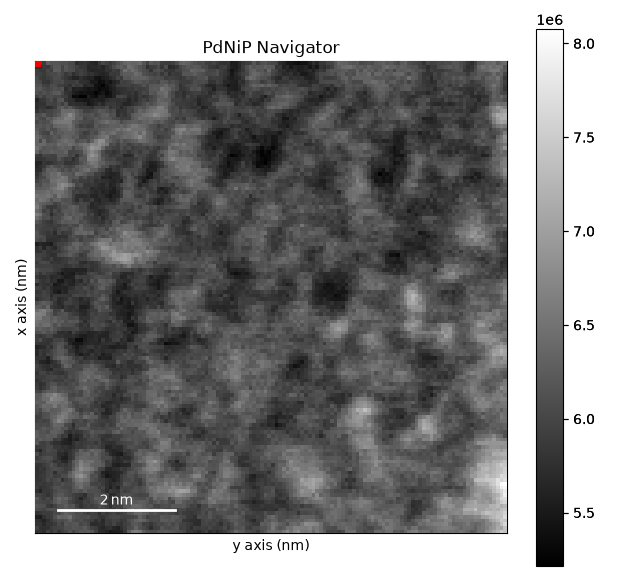
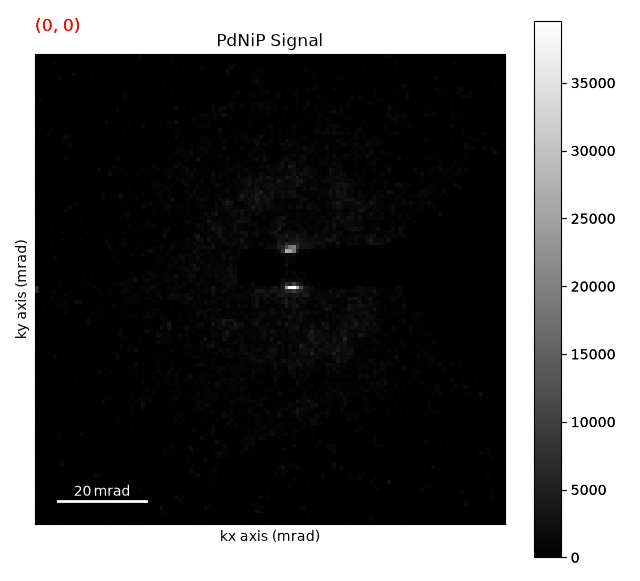
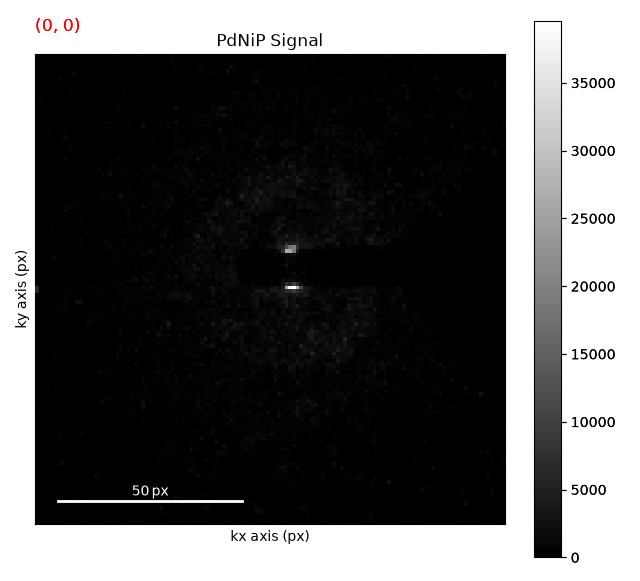
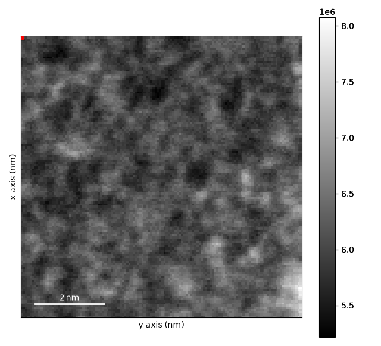
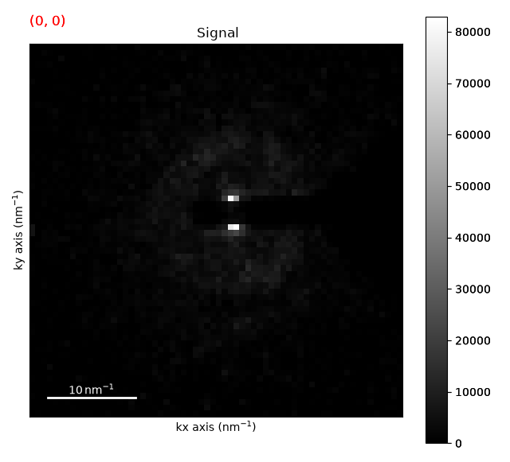

Note
Go to the end to download the full example code.
Flat Ewald’s Sphere Assumption#
In most cases, the Ewald’s sphere is assumed to be flat for diffraction patterns when doing 4D STEM. This is almost always a good assumption. That being said there are a couple of common units used with 4D STEM (e.g. nm-1, mrad, pixel coordinates) and it is important to understand how these units relate to each other. These units are also related to the camera length, pixel size, and beam energy (wavelength) of the microscope. In reality the beam energy is really the only thing that you need to know.
Let’s look at an example of this using the ZrNb Precipitate dataset.
from pyxem.data import pdnip_glass
g = pdnip_glass(allow_download=True)
g.calibration.beam_energy = "200 kV"
g.calibration.convergance_angle = "1 mrad" # set the convergence angle
0%| | 0.00/305M [00:00<?, ?B/s]
0%| | 4.10k/305M [00:00<3:07:23, 27.1kB/s]
0%| | 32.8k/305M [00:00<41:34, 122kB/s]
0%| | 81.9k/305M [00:00<20:19, 250kB/s]
0%| | 147k/305M [00:00<15:32, 326kB/s]
0%| | 213k/305M [00:00<13:52, 366kB/s]
0%| | 311k/305M [00:00<10:56, 463kB/s]
0%| | 426k/305M [00:01<09:03, 560kB/s]
0%| | 524k/305M [00:01<08:39, 586kB/s]
0%| | 655k/305M [00:01<07:33, 671kB/s]
0%| | 737k/305M [00:01<08:03, 628kB/s]
0%| | 803k/305M [00:01<09:06, 556kB/s]
0%| | 868k/305M [00:01<09:46, 518kB/s]
0%|▏ | 983k/305M [00:01<08:37, 587kB/s]
0%|▏ | 1.07M/305M [00:02<08:43, 580kB/s]
0%|▏ | 1.15M/305M [00:02<08:55, 567kB/s]
0%|▏ | 1.23M/305M [00:02<09:04, 557kB/s]
0%|▏ | 1.31M/305M [00:02<09:15, 546kB/s]
0%|▏ | 1.38M/305M [00:02<09:53, 511kB/s]
0%|▏ | 1.48M/305M [00:02<09:10, 551kB/s]
1%|▏ | 1.58M/305M [00:03<08:43, 579kB/s]
1%|▏ | 1.66M/305M [00:03<08:55, 565kB/s]
1%|▏ | 1.72M/305M [00:03<09:48, 514kB/s]
1%|▏ | 1.79M/305M [00:03<10:22, 487kB/s]
1%|▏ | 1.86M/305M [00:03<10:45, 469kB/s]
1%|▏ | 1.92M/305M [00:03<11:08, 453kB/s]
1%|▎ | 1.99M/305M [00:03<11:19, 445kB/s]
1%|▎ | 2.05M/305M [00:04<11:26, 441kB/s]
1%|▎ | 2.12M/305M [00:04<11:32, 437kB/s]
1%|▎ | 2.25M/305M [00:04<08:58, 562kB/s]
1%|▎ | 2.31M/305M [00:04<09:39, 522kB/s]
1%|▎ | 2.40M/305M [00:04<09:34, 526kB/s]
1%|▎ | 2.49M/305M [00:04<08:58, 562kB/s]
1%|▎ | 2.58M/305M [00:05<09:23, 536kB/s]
1%|▎ | 2.64M/305M [00:05<10:09, 496kB/s]
1%|▎ | 2.70M/305M [00:05<10:39, 472kB/s]
1%|▎ | 2.77M/305M [00:05<10:57, 459kB/s]
1%|▎ | 2.85M/305M [00:05<10:27, 481kB/s]
1%|▍ | 2.93M/305M [00:05<10:06, 497kB/s]
1%|▍ | 3.01M/305M [00:05<09:52, 509kB/s]
1%|▍ | 3.15M/305M [00:06<08:12, 613kB/s]
1%|▍ | 3.21M/305M [00:06<09:01, 557kB/s]
1%|▍ | 3.34M/305M [00:06<07:46, 646kB/s]
1%|▍ | 3.41M/305M [00:06<08:39, 579kB/s]
1%|▍ | 3.47M/305M [00:06<09:29, 528kB/s]
1%|▍ | 3.54M/305M [00:06<10:05, 497kB/s]
1%|▍ | 3.60M/305M [00:07<10:32, 476kB/s]
1%|▍ | 3.69M/305M [00:07<10:09, 494kB/s]
1%|▍ | 3.78M/305M [00:07<09:18, 538kB/s]
1%|▌ | 3.92M/305M [00:07<07:54, 634kB/s]
1%|▌ | 4.00M/305M [00:07<08:20, 601kB/s]
1%|▌ | 4.06M/305M [00:07<09:10, 546kB/s]
1%|▌ | 4.13M/305M [00:07<09:48, 511kB/s]
1%|▌ | 4.19M/305M [00:08<10:23, 482kB/s]
1%|▌ | 4.29M/305M [00:08<09:26, 530kB/s]
1%|▌ | 4.36M/305M [00:08<10:00, 500kB/s]
1%|▌ | 4.51M/305M [00:08<07:49, 639kB/s]
2%|▌ | 4.57M/305M [00:08<08:40, 576kB/s]
2%|▌ | 4.67M/305M [00:08<08:24, 594kB/s]
2%|▌ | 4.73M/305M [00:09<09:10, 545kB/s]
2%|▌ | 4.83M/305M [00:09<08:49, 567kB/s]
2%|▋ | 4.89M/305M [00:09<12:51, 389kB/s]
2%|▋ | 4.97M/305M [00:09<11:34, 432kB/s]
2%|▋ | 5.05M/305M [00:09<10:53, 459kB/s]
2%|▋ | 5.15M/305M [00:09<09:48, 509kB/s]
2%|▋ | 5.25M/305M [00:10<09:08, 546kB/s]
2%|▋ | 5.37M/305M [00:10<08:15, 604kB/s]
2%|▋ | 5.45M/305M [00:10<08:31, 585kB/s]
2%|▋ | 5.53M/305M [00:10<08:51, 563kB/s]
2%|▋ | 5.61M/305M [00:10<08:58, 555kB/s]
2%|▋ | 5.69M/305M [00:10<09:04, 549kB/s]
2%|▋ | 5.80M/305M [00:11<08:11, 608kB/s]
2%|▊ | 5.89M/305M [00:11<08:29, 587kB/s]
2%|▊ | 5.97M/305M [00:11<08:42, 572kB/s]
2%|▊ | 6.05M/305M [00:11<08:51, 561kB/s]
2%|▊ | 6.18M/305M [00:11<07:39, 650kB/s]
2%|▊ | 6.30M/305M [00:11<07:19, 678kB/s]
2%|▊ | 6.37M/305M [00:11<08:07, 612kB/s]
2%|▊ | 6.44M/305M [00:12<08:33, 581kB/s]
2%|▊ | 6.57M/305M [00:12<07:36, 653kB/s]
2%|▊ | 6.64M/305M [00:12<08:28, 586kB/s]
2%|▊ | 6.71M/305M [00:12<09:41, 512kB/s]
2%|▊ | 6.77M/305M [00:12<10:11, 487kB/s]
2%|▉ | 6.84M/305M [00:12<10:33, 470kB/s]
2%|▉ | 6.92M/305M [00:13<10:08, 489kB/s]
2%|▉ | 6.98M/305M [00:13<10:31, 471kB/s]
2%|▉ | 7.11M/305M [00:13<08:30, 583kB/s]
2%|▉ | 7.18M/305M [00:13<09:15, 535kB/s]
2%|▉ | 7.28M/305M [00:13<08:44, 567kB/s]
2%|▉ | 7.36M/305M [00:13<08:52, 558kB/s]
2%|▉ | 7.51M/305M [00:13<07:17, 679kB/s]
2%|▉ | 7.59M/305M [00:14<07:52, 628kB/s]
3%|▉ | 7.67M/305M [00:14<08:15, 599kB/s]
3%|▉ | 7.73M/305M [00:14<09:08, 541kB/s]
3%|▉ | 7.80M/305M [00:14<09:51, 501kB/s]
3%|█ | 7.86M/305M [00:14<10:20, 478kB/s]
3%|█ | 8.01M/305M [00:14<07:57, 621kB/s]
3%|█ | 8.13M/305M [00:15<07:30, 658kB/s]
3%|█ | 8.21M/305M [00:15<07:56, 622kB/s]
3%|█ | 8.31M/305M [00:15<07:51, 628kB/s]
3%|█ | 8.42M/305M [00:15<07:25, 665kB/s]
3%|█ | 8.57M/305M [00:15<06:32, 754kB/s]
3%|█ | 8.65M/305M [00:15<07:14, 681kB/s]
3%|█ | 8.73M/305M [00:15<07:38, 646kB/s]
3%|█▏ | 8.86M/305M [00:16<06:58, 707kB/s]
3%|█▏ | 8.94M/305M [00:16<07:49, 630kB/s]
3%|█▏ | 9.00M/305M [00:16<08:38, 570kB/s]
3%|█▏ | 9.08M/305M [00:16<09:05, 542kB/s]
3%|█▏ | 9.19M/305M [00:16<08:09, 604kB/s]
3%|█▏ | 9.25M/305M [00:18<36:45, 134kB/s]
3%|█▏ | 9.30M/305M [00:18<32:58, 149kB/s]
3%|█▏ | 9.35M/305M [00:18<28:24, 173kB/s]
3%|█▏ | 9.42M/305M [00:18<23:22, 211kB/s]
3%|█▏ | 9.49M/305M [00:19<19:16, 255kB/s]
3%|█▏ | 9.56M/305M [00:19<16:43, 294kB/s]
3%|█▏ | 9.65M/305M [00:19<13:58, 352kB/s]
3%|█▏ | 9.72M/305M [00:19<13:22, 367kB/s]
3%|█▎ | 9.78M/305M [00:19<12:51, 382kB/s]
3%|█▎ | 9.86M/305M [00:19<11:45, 418kB/s]
3%|█▎ | 9.93M/305M [00:20<11:41, 420kB/s]
3%|█▎ | 10.0M/305M [00:20<10:52, 451kB/s]
3%|█▎ | 10.1M/305M [00:20<11:03, 444kB/s]
3%|█▎ | 10.2M/305M [00:20<08:15, 594kB/s]
3%|█▎ | 10.3M/305M [00:20<08:30, 576kB/s]
3%|█▎ | 10.4M/305M [00:20<08:15, 594kB/s]
3%|█▎ | 10.5M/305M [00:20<08:03, 608kB/s]
3%|█▎ | 10.6M/305M [00:21<07:55, 618kB/s]
4%|█▎ | 10.7M/305M [00:21<08:21, 586kB/s]
4%|█▍ | 10.8M/305M [00:21<07:00, 699kB/s]
4%|█▍ | 10.9M/305M [00:21<07:31, 650kB/s]
4%|█▍ | 11.1M/305M [00:21<06:34, 745kB/s]
4%|█▍ | 11.1M/305M [00:21<07:10, 682kB/s]
4%|█▍ | 11.2M/305M [00:22<07:17, 671kB/s]
4%|█▍ | 11.3M/305M [00:22<07:27, 655kB/s]
4%|█▍ | 11.4M/305M [00:22<07:31, 649kB/s]
4%|█▍ | 11.5M/305M [00:22<07:17, 671kB/s]
4%|█▍ | 11.6M/305M [00:22<07:22, 661kB/s]
4%|█▌ | 11.8M/305M [00:22<06:14, 782kB/s]
4%|█▌ | 11.9M/305M [00:22<06:35, 740kB/s]
4%|█▌ | 12.1M/305M [00:23<06:02, 807kB/s]
4%|█▌ | 12.1M/305M [00:23<06:42, 726kB/s]
4%|█▌ | 12.2M/305M [00:23<06:57, 701kB/s]
4%|█▌ | 12.4M/305M [00:23<06:14, 780kB/s]
4%|█▌ | 12.5M/305M [00:23<06:55, 703kB/s]
4%|█▌ | 12.6M/305M [00:23<07:06, 685kB/s]
4%|█▋ | 12.7M/305M [00:24<06:36, 736kB/s]
4%|█▋ | 12.8M/305M [00:24<07:21, 661kB/s]
4%|█▋ | 12.9M/305M [00:24<07:24, 656kB/s]
4%|█▋ | 13.0M/305M [00:24<07:56, 613kB/s]
4%|█▋ | 13.0M/305M [00:24<08:04, 601kB/s]
4%|█▋ | 13.1M/305M [00:24<07:56, 611kB/s]
4%|█▋ | 13.3M/305M [00:25<07:26, 652kB/s]
4%|█▋ | 13.4M/305M [00:25<07:07, 681kB/s]
4%|█▋ | 13.5M/305M [00:25<06:37, 732kB/s]
4%|█▋ | 13.6M/305M [00:25<06:19, 767kB/s]
5%|█▊ | 13.8M/305M [00:25<06:06, 794kB/s]
5%|█▊ | 13.9M/305M [00:25<06:31, 743kB/s]
5%|█▊ | 14.0M/305M [00:25<06:47, 713kB/s]
5%|█▊ | 14.1M/305M [00:26<06:10, 784kB/s]
5%|█▊ | 14.2M/305M [00:26<06:32, 740kB/s]
5%|█▊ | 14.3M/305M [00:26<07:07, 679kB/s]
5%|█▊ | 14.4M/305M [00:26<06:19, 764kB/s]
5%|█▊ | 14.5M/305M [00:26<06:56, 697kB/s]
5%|█▊ | 14.6M/305M [00:26<06:46, 713kB/s]
5%|█▉ | 14.8M/305M [00:27<06:40, 724kB/s]
5%|█▉ | 14.9M/305M [00:27<06:23, 756kB/s]
5%|█▉ | 15.0M/305M [00:27<05:53, 818kB/s]
5%|█▉ | 15.1M/305M [00:27<06:03, 795kB/s]
5%|█▉ | 15.3M/305M [00:27<05:56, 812kB/s]
5%|█▉ | 15.4M/305M [00:27<06:05, 792kB/s]
5%|█▉ | 15.5M/305M [00:27<06:10, 780kB/s]
5%|██ | 15.7M/305M [00:28<05:34, 863kB/s]
5%|██ | 15.8M/305M [00:28<06:09, 781kB/s]
5%|██ | 15.8M/305M [00:28<06:38, 724kB/s]
5%|██ | 16.0M/305M [00:28<06:02, 795kB/s]
5%|██ | 16.1M/305M [00:28<06:10, 779kB/s]
5%|██ | 16.2M/305M [00:28<06:31, 737kB/s]
5%|██ | 16.3M/305M [00:29<06:46, 709kB/s]
5%|██ | 16.4M/305M [00:29<07:21, 654kB/s]
5%|██ | 16.5M/305M [00:29<07:25, 646kB/s]
5%|██▏ | 16.6M/305M [00:29<07:27, 644kB/s]
5%|██▏ | 16.7M/305M [00:29<07:27, 644kB/s]
6%|██▏ | 16.8M/305M [00:29<07:26, 644kB/s]
6%|██▏ | 16.9M/305M [00:29<07:05, 676kB/s]
6%|██▏ | 17.0M/305M [00:30<07:21, 652kB/s]
6%|██▏ | 17.1M/305M [00:30<06:43, 712kB/s]
6%|██▏ | 17.2M/305M [00:30<06:55, 692kB/s]
6%|██▏ | 17.4M/305M [00:30<06:45, 709kB/s]
6%|██▏ | 17.5M/305M [00:30<06:21, 754kB/s]
6%|██▏ | 17.6M/305M [00:30<06:56, 689kB/s]
6%|██▎ | 17.6M/305M [00:31<07:26, 643kB/s]
6%|██▎ | 17.7M/305M [00:31<07:25, 643kB/s]
6%|██▎ | 17.9M/305M [00:31<11:37, 411kB/s]
6%|██▎ | 17.9M/305M [00:31<11:32, 414kB/s]
6%|██▎ | 18.0M/305M [00:31<10:52, 439kB/s]
6%|██▎ | 18.1M/305M [00:32<10:58, 435kB/s]
6%|██▎ | 18.1M/305M [00:32<11:23, 419kB/s]
6%|██▎ | 18.2M/305M [00:32<11:47, 405kB/s]
6%|██▎ | 18.3M/305M [00:32<10:09, 470kB/s]
6%|██▎ | 18.4M/305M [00:32<09:46, 488kB/s]
6%|██▎ | 18.4M/305M [00:32<09:31, 500kB/s]
6%|██▎ | 18.5M/305M [00:33<08:48, 542kB/s]
6%|██▍ | 18.7M/305M [00:33<07:54, 603kB/s]
6%|██▍ | 18.7M/305M [00:33<08:10, 583kB/s]
6%|██▍ | 18.9M/305M [00:33<07:32, 631kB/s]
6%|██▍ | 18.9M/305M [00:33<08:22, 569kB/s]
6%|██▍ | 19.0M/305M [00:33<08:32, 558kB/s]
6%|██▍ | 19.1M/305M [00:33<08:09, 583kB/s]
6%|██▍ | 19.2M/305M [00:34<08:22, 569kB/s]
6%|██▍ | 19.3M/305M [00:34<08:04, 589kB/s]
6%|██▍ | 19.3M/305M [00:34<08:50, 538kB/s]
6%|██▍ | 19.5M/305M [00:34<07:55, 600kB/s]
6%|██▌ | 19.6M/305M [00:34<07:22, 645kB/s]
6%|██▌ | 19.7M/305M [00:34<06:24, 740kB/s]
7%|██▌ | 19.8M/305M [00:35<06:59, 679kB/s]
7%|██▌ | 20.0M/305M [00:35<06:17, 755kB/s]
7%|██▌ | 20.0M/305M [00:35<06:34, 721kB/s]
7%|██▌ | 20.1M/305M [00:35<06:48, 696kB/s]
7%|██▌ | 20.2M/305M [00:35<07:35, 624kB/s]
7%|██▌ | 20.3M/305M [00:35<07:45, 611kB/s]
7%|██▌ | 20.5M/305M [00:35<06:36, 716kB/s]
7%|██▋ | 20.5M/305M [00:36<07:10, 660kB/s]
7%|██▋ | 20.7M/305M [00:36<06:54, 686kB/s]
7%|██▋ | 20.8M/305M [00:36<06:42, 705kB/s]
7%|██▋ | 20.9M/305M [00:36<07:30, 629kB/s]
7%|██▋ | 20.9M/305M [00:36<08:17, 571kB/s]
7%|██▋ | 21.0M/305M [00:36<07:13, 654kB/s]
7%|██▋ | 21.1M/305M [00:37<07:15, 651kB/s]
7%|██▋ | 21.2M/305M [00:37<07:39, 617kB/s]
7%|██▋ | 21.4M/305M [00:37<07:04, 667kB/s]
7%|██▋ | 21.5M/305M [00:37<07:12, 654kB/s]
7%|██▊ | 21.6M/305M [00:37<06:19, 745kB/s]
7%|██▊ | 21.7M/305M [00:37<06:35, 715kB/s]
7%|██▊ | 21.9M/305M [00:38<05:58, 789kB/s]
7%|██▊ | 22.0M/305M [00:38<06:19, 744kB/s]
7%|██▊ | 22.1M/305M [00:38<05:38, 833kB/s]
7%|██▊ | 22.3M/305M [00:38<05:23, 873kB/s]
7%|██▊ | 22.3M/305M [00:38<05:58, 786kB/s]
7%|██▊ | 22.4M/305M [00:38<06:31, 721kB/s]
7%|██▉ | 22.6M/305M [00:38<05:20, 881kB/s]
7%|██▉ | 22.7M/305M [00:39<05:54, 795kB/s]
8%|██▉ | 22.9M/305M [00:39<05:40, 827kB/s]
8%|██▉ | 22.9M/305M [00:39<06:16, 749kB/s]
8%|██▉ | 23.0M/305M [00:39<06:55, 677kB/s]
8%|██▉ | 23.2M/305M [00:39<06:09, 763kB/s]
8%|██▉ | 23.4M/305M [00:39<04:45, 984kB/s]
8%|███ | 23.5M/305M [00:40<04:56, 947kB/s]
8%|███ | 23.6M/305M [00:40<05:28, 855kB/s]
8%|███ | 23.7M/305M [00:40<06:06, 767kB/s]
8%|███ | 23.9M/305M [00:40<05:43, 817kB/s]
8%|███ | 24.0M/305M [00:40<06:09, 759kB/s]
8%|███ | 24.1M/305M [00:40<06:27, 725kB/s]
8%|███ | 24.1M/305M [00:42<36:05, 130kB/s]
8%|███ | 24.2M/305M [00:43<34:20, 136kB/s]
8%|███ | 24.2M/305M [00:43<30:56, 151kB/s]
8%|███ | 24.3M/305M [00:43<24:39, 189kB/s]
8%|███ | 24.4M/305M [00:43<20:52, 224kB/s]
8%|███▏ | 24.4M/305M [00:43<18:02, 259kB/s]
8%|███▏ | 24.5M/305M [00:44<14:54, 313kB/s]
8%|███▏ | 24.7M/305M [00:44<10:42, 436kB/s]
8%|███▏ | 24.8M/305M [00:44<08:42, 535kB/s]
8%|███▏ | 24.9M/305M [00:44<07:33, 617kB/s]
8%|███▏ | 25.0M/305M [00:44<07:49, 595kB/s]
8%|███▏ | 25.1M/305M [00:44<07:28, 624kB/s]
8%|███▏ | 25.2M/305M [00:44<07:40, 607kB/s]
8%|███▏ | 25.3M/305M [00:45<06:52, 678kB/s]
8%|███▎ | 25.4M/305M [00:45<07:00, 665kB/s]
8%|███▎ | 25.5M/305M [00:45<06:46, 687kB/s]
8%|███▎ | 25.7M/305M [00:45<06:15, 743kB/s]
8%|███▎ | 25.8M/305M [00:45<06:54, 673kB/s]
8%|███▎ | 25.9M/305M [00:45<06:55, 671kB/s]
9%|███▎ | 25.9M/305M [00:46<07:22, 630kB/s]
9%|███▎ | 26.0M/305M [00:46<07:19, 634kB/s]
9%|███▎ | 26.2M/305M [00:46<06:20, 732kB/s]
9%|███▎ | 26.3M/305M [00:46<06:34, 705kB/s]
9%|███▍ | 26.4M/305M [00:46<05:55, 782kB/s]
9%|███▍ | 26.5M/305M [00:46<06:31, 709kB/s]
9%|███▍ | 26.6M/305M [00:47<07:13, 641kB/s]
9%|███▍ | 26.7M/305M [00:47<07:54, 586kB/s]
9%|███▍ | 26.8M/305M [00:47<07:41, 602kB/s]
9%|███▍ | 26.8M/305M [00:47<07:56, 582kB/s]
9%|███▍ | 26.9M/305M [00:47<08:09, 568kB/s]
9%|███▍ | 27.0M/305M [00:47<07:50, 590kB/s]
9%|███▍ | 27.1M/305M [00:47<07:14, 638kB/s]
9%|███▍ | 27.2M/305M [00:48<07:36, 608kB/s]
9%|███▍ | 27.3M/305M [00:48<07:52, 586kB/s]
9%|███▌ | 27.4M/305M [00:48<06:36, 699kB/s]
9%|███▌ | 27.5M/305M [00:48<06:46, 682kB/s]
9%|███▌ | 27.6M/305M [00:48<07:30, 615kB/s]
9%|███▌ | 27.7M/305M [00:48<08:22, 551kB/s]
9%|███▌ | 27.8M/305M [00:48<07:58, 578kB/s]
9%|███▌ | 27.9M/305M [00:49<08:09, 566kB/s]
9%|███▌ | 27.9M/305M [00:49<08:17, 556kB/s]
9%|███▌ | 28.0M/305M [00:49<07:54, 582kB/s]
9%|███▌ | 28.1M/305M [00:49<07:40, 601kB/s]
9%|███▌ | 28.2M/305M [00:49<07:55, 581kB/s]
9%|███▌ | 28.3M/305M [00:49<08:06, 568kB/s]
9%|███▋ | 28.4M/305M [00:50<06:41, 687kB/s]
9%|███▋ | 28.5M/305M [00:50<07:09, 642kB/s]
9%|███▋ | 28.6M/305M [00:50<07:10, 641kB/s]
9%|███▋ | 28.7M/305M [00:50<07:39, 600kB/s]
9%|███▋ | 28.8M/305M [00:50<06:49, 674kB/s]
9%|███▋ | 28.9M/305M [00:50<07:35, 606kB/s]
10%|███▋ | 29.0M/305M [00:50<08:25, 545kB/s]
10%|███▋ | 29.1M/305M [00:51<06:50, 671kB/s]
10%|███▋ | 29.2M/305M [00:51<06:56, 661kB/s]
10%|███▋ | 29.3M/305M [00:51<07:39, 600kB/s]
10%|███▊ | 29.4M/305M [00:51<08:00, 573kB/s]
10%|███▊ | 29.4M/305M [00:51<08:09, 562kB/s]
10%|███▊ | 29.6M/305M [00:51<07:26, 617kB/s]
10%|███▊ | 29.6M/305M [00:52<08:11, 559kB/s]
10%|███▊ | 29.7M/305M [00:52<07:50, 584kB/s]
10%|███▊ | 29.8M/305M [00:52<08:31, 538kB/s]
10%|███▊ | 29.9M/305M [00:52<09:03, 505kB/s]
10%|███▊ | 30.0M/305M [00:52<07:07, 643kB/s]
10%|███▊ | 30.1M/305M [00:52<07:06, 643kB/s]
10%|███▊ | 30.2M/305M [00:52<07:29, 611kB/s]
10%|███▉ | 30.3M/305M [00:53<06:23, 716kB/s]
10%|███▉ | 30.4M/305M [00:53<07:04, 646kB/s]
10%|███▉ | 30.5M/305M [00:53<06:35, 693kB/s]
10%|███▉ | 30.7M/305M [00:53<05:41, 803kB/s]
10%|███▉ | 30.8M/305M [00:53<06:21, 718kB/s]
10%|███▉ | 30.8M/305M [00:53<07:02, 647kB/s]
10%|███▉ | 30.9M/305M [00:54<07:50, 582kB/s]
10%|███▉ | 31.0M/305M [00:54<07:57, 574kB/s]
10%|███▉ | 31.1M/305M [00:54<08:10, 558kB/s]
10%|███▉ | 31.2M/305M [00:54<08:15, 552kB/s]
10%|███▉ | 31.2M/305M [00:54<08:19, 548kB/s]
10%|████ | 31.3M/305M [00:54<08:21, 544kB/s]
10%|████ | 31.5M/305M [00:54<06:47, 670kB/s]
10%|████ | 31.6M/305M [00:55<06:52, 662kB/s]
10%|████ | 31.7M/305M [00:55<06:36, 689kB/s]
10%|████ | 31.8M/305M [00:55<06:44, 675kB/s]
10%|████ | 31.9M/305M [00:55<06:50, 665kB/s]
10%|████ | 32.0M/305M [00:55<07:15, 626kB/s]
11%|████ | 32.0M/305M [00:56<12:28, 364kB/s]
11%|████ | 32.1M/305M [00:56<12:03, 377kB/s]
11%|████ | 32.2M/305M [00:56<10:23, 437kB/s]
11%|████▏ | 32.3M/305M [00:56<08:31, 533kB/s]
11%|████▏ | 32.5M/305M [00:56<07:16, 624kB/s]
11%|████▏ | 32.7M/305M [00:56<05:39, 800kB/s]
11%|████▏ | 32.8M/305M [00:57<06:06, 741kB/s]
11%|████▏ | 32.9M/305M [00:57<06:05, 744kB/s]
11%|████▏ | 33.0M/305M [00:57<05:36, 808kB/s]
11%|████▏ | 33.1M/305M [00:57<06:08, 736kB/s]
11%|████▎ | 33.2M/305M [00:57<06:29, 698kB/s]
11%|████▎ | 33.3M/305M [00:57<06:41, 676kB/s]
11%|████▎ | 33.4M/305M [00:58<05:57, 759kB/s]
11%|████▎ | 33.6M/305M [00:58<05:44, 788kB/s]
11%|████▎ | 33.7M/305M [00:58<05:22, 840kB/s]
11%|████▎ | 33.8M/305M [00:58<05:46, 782kB/s]
11%|████▎ | 33.9M/305M [00:58<05:50, 773kB/s]
11%|████▎ | 34.0M/305M [00:58<06:08, 734kB/s]
11%|████▍ | 34.2M/305M [00:58<05:40, 794kB/s]
11%|████▍ | 34.3M/305M [00:59<06:16, 718kB/s]
11%|████▍ | 34.4M/305M [00:59<06:11, 727kB/s]
11%|████▍ | 34.5M/305M [00:59<06:43, 670kB/s]
11%|████▍ | 34.6M/305M [00:59<06:49, 660kB/s]
11%|████▍ | 34.7M/305M [00:59<06:54, 652kB/s]
11%|████▍ | 34.8M/305M [00:59<06:56, 648kB/s]
11%|████▍ | 34.9M/305M [01:00<06:37, 679kB/s]
11%|████▍ | 35.0M/305M [01:00<07:05, 633kB/s]
12%|████▍ | 35.1M/305M [01:00<06:24, 700kB/s]
12%|████▌ | 35.2M/305M [01:00<06:34, 683kB/s]
12%|████▌ | 35.3M/305M [01:00<07:01, 639kB/s]
12%|████▌ | 35.4M/305M [01:00<07:00, 641kB/s]
12%|████▌ | 35.5M/305M [01:00<06:04, 738kB/s]
12%|████▌ | 35.6M/305M [01:01<06:37, 676kB/s]
12%|████▌ | 35.7M/305M [01:01<06:43, 667kB/s]
12%|████▌ | 35.8M/305M [01:01<07:18, 613kB/s]
12%|████▌ | 35.9M/305M [01:01<07:19, 611kB/s]
12%|████▌ | 36.0M/305M [01:01<07:14, 619kB/s]
12%|████▌ | 36.0M/305M [01:01<07:31, 594kB/s]
12%|████▋ | 36.2M/305M [01:02<06:59, 641kB/s]
12%|████▋ | 36.3M/305M [01:02<07:04, 633kB/s]
12%|████▋ | 36.4M/305M [01:02<07:01, 636kB/s]
12%|████▋ | 36.4M/305M [01:02<07:22, 606kB/s]
12%|████▋ | 36.5M/305M [01:02<07:14, 617kB/s]
12%|████▋ | 36.7M/305M [01:02<06:11, 722kB/s]
12%|████▋ | 36.8M/305M [01:02<06:42, 666kB/s]
12%|████▋ | 36.9M/305M [01:03<06:46, 659kB/s]
12%|████▋ | 36.9M/305M [01:03<07:10, 622kB/s]
12%|████▋ | 37.1M/305M [01:03<06:57, 642kB/s]
12%|████▊ | 37.2M/305M [01:03<07:02, 633kB/s]
12%|████▊ | 37.3M/305M [01:03<07:01, 634kB/s]
12%|████▊ | 37.3M/305M [01:03<07:45, 574kB/s]
12%|████▊ | 37.4M/305M [01:04<07:06, 626kB/s]
12%|████▊ | 37.6M/305M [01:04<06:42, 663kB/s]
12%|████▊ | 37.7M/305M [01:04<06:10, 721kB/s]
12%|████▊ | 37.8M/305M [01:04<05:50, 761kB/s]
12%|████▊ | 37.9M/305M [01:04<06:07, 726kB/s]
12%|████▊ | 38.0M/305M [01:04<06:38, 670kB/s]
13%|████▉ | 38.2M/305M [01:05<05:37, 790kB/s]
13%|████▉ | 38.3M/305M [01:05<05:42, 778kB/s]
13%|████▉ | 38.4M/305M [01:05<06:21, 697kB/s]
13%|████▉ | 38.5M/305M [01:05<05:42, 778kB/s]
13%|████▉ | 38.6M/305M [01:05<05:46, 769kB/s]
13%|████▉ | 38.7M/305M [01:05<05:34, 796kB/s]
13%|████▉ | 38.9M/305M [01:05<05:26, 813kB/s]
13%|████▉ | 39.0M/305M [01:06<06:03, 730kB/s]
13%|█████ | 39.1M/305M [01:06<06:17, 704kB/s]
13%|█████ | 39.2M/305M [01:06<05:53, 750kB/s]
13%|█████ | 39.3M/305M [01:06<05:25, 815kB/s]
13%|█████ | 39.4M/305M [01:06<05:33, 796kB/s]
13%|█████ | 39.5M/305M [01:06<06:09, 718kB/s]
13%|█████ | 39.6M/305M [01:06<06:04, 728kB/s]
13%|█████ | 39.8M/305M [01:07<06:00, 735kB/s]
13%|█████ | 39.9M/305M [01:07<05:29, 803kB/s]
13%|█████ | 40.0M/305M [01:07<06:05, 723kB/s]
13%|█████▏ | 40.1M/305M [01:07<06:37, 665kB/s]
13%|█████▏ | 40.2M/305M [01:07<06:05, 723kB/s]
13%|█████▏ | 40.3M/305M [01:07<06:36, 667kB/s]
13%|█████▏ | 40.4M/305M [01:08<06:25, 686kB/s]
13%|█████▏ | 40.5M/305M [01:08<06:36, 666kB/s]
13%|█████▏ | 40.6M/305M [01:08<07:01, 626kB/s]
13%|█████▏ | 40.7M/305M [01:08<06:37, 664kB/s]
13%|█████▏ | 40.8M/305M [01:08<06:41, 656kB/s]
13%|█████▏ | 40.9M/305M [01:08<06:44, 653kB/s]
13%|█████▏ | 41.0M/305M [01:08<07:06, 618kB/s]
13%|█████▎ | 41.1M/305M [01:09<06:05, 722kB/s]
14%|█████▎ | 41.2M/305M [01:09<06:00, 731kB/s]
14%|█████▎ | 41.4M/305M [01:09<05:15, 833kB/s]
14%|█████▎ | 41.5M/305M [01:09<05:25, 808kB/s]
14%|█████▎ | 41.6M/305M [01:09<05:19, 823kB/s]
14%|█████▎ | 41.7M/305M [01:09<05:54, 742kB/s]
14%|█████▎ | 41.9M/305M [01:10<05:16, 831kB/s]
14%|█████▍ | 42.0M/305M [01:10<05:39, 775kB/s]
14%|█████▍ | 42.1M/305M [01:10<05:42, 767kB/s]
14%|█████▍ | 42.2M/305M [01:10<05:59, 730kB/s]
14%|█████▍ | 42.3M/305M [01:10<05:41, 767kB/s]
14%|█████▍ | 42.4M/305M [01:10<05:44, 762kB/s]
14%|█████▍ | 42.5M/305M [01:10<06:01, 726kB/s]
14%|█████▍ | 42.7M/305M [01:11<05:45, 757kB/s]
14%|█████▍ | 42.7M/305M [01:11<06:18, 691kB/s]
14%|█████▍ | 42.9M/305M [01:11<05:24, 805kB/s]
14%|█████▌ | 43.0M/305M [01:11<06:01, 725kB/s]
14%|█████▌ | 43.1M/305M [01:11<06:31, 668kB/s]
14%|█████▌ | 43.3M/305M [01:11<05:19, 818kB/s]
14%|█████▌ | 43.4M/305M [01:12<05:11, 838kB/s]
14%|█████▌ | 43.5M/305M [01:12<05:32, 786kB/s]
14%|█████▌ | 43.6M/305M [01:12<05:50, 744kB/s]
14%|█████▌ | 43.7M/305M [01:12<05:35, 777kB/s]
14%|█████▌ | 43.9M/305M [01:12<05:12, 833kB/s]
14%|█████▋ | 44.0M/305M [01:12<05:10, 840kB/s]
14%|█████▋ | 44.1M/305M [01:12<05:20, 814kB/s]
15%|█████▋ | 44.3M/305M [01:13<05:15, 826kB/s]
15%|█████▋ | 44.3M/305M [01:13<05:47, 748kB/s]
15%|█████▋ | 44.4M/305M [01:13<06:07, 709kB/s]
15%|█████▋ | 44.5M/305M [01:13<06:35, 657kB/s]
15%|█████▋ | 44.7M/305M [01:13<05:07, 845kB/s]
15%|█████▋ | 44.8M/305M [01:13<05:21, 807kB/s]
15%|█████▊ | 44.9M/305M [01:14<05:42, 758kB/s]
15%|█████▊ | 45.0M/305M [01:14<05:58, 724kB/s]
15%|█████▊ | 45.1M/305M [01:14<06:38, 652kB/s]
15%|█████▊ | 45.3M/305M [01:14<05:40, 761kB/s]
15%|█████▊ | 45.4M/305M [01:14<05:28, 789kB/s]
15%|█████▊ | 45.5M/305M [01:14<05:33, 777kB/s]
15%|█████▊ | 45.6M/305M [01:14<05:51, 736kB/s]
15%|█████▊ | 45.7M/305M [01:15<05:49, 740kB/s]
15%|█████▊ | 45.8M/305M [01:15<05:33, 775kB/s]
15%|█████▉ | 45.9M/305M [01:15<05:51, 736kB/s]
15%|█████▉ | 46.1M/305M [01:15<05:34, 772kB/s]
15%|█████▉ | 46.2M/305M [01:15<06:08, 701kB/s]
15%|█████▉ | 46.3M/305M [01:15<06:18, 682kB/s]
15%|█████▉ | 46.4M/305M [01:16<06:25, 671kB/s]
15%|█████▉ | 46.4M/305M [01:16<06:49, 630kB/s]
15%|█████▉ | 46.5M/305M [01:16<07:08, 602kB/s]
15%|█████▉ | 46.7M/305M [01:16<05:19, 807kB/s]
15%|█████▉ | 46.9M/305M [01:16<05:05, 843kB/s]
15%|██████ | 47.0M/305M [01:16<05:34, 771kB/s]
15%|██████ | 47.0M/305M [01:16<06:07, 702kB/s]
15%|██████ | 47.2M/305M [01:17<05:59, 716kB/s]
16%|██████ | 47.2M/305M [01:17<06:28, 663kB/s]
16%|██████ | 47.3M/305M [01:17<06:51, 625kB/s]
16%|██████ | 47.4M/305M [01:17<06:18, 679kB/s]
16%|██████ | 47.6M/305M [01:17<05:36, 765kB/s]
16%|██████ | 47.7M/305M [01:17<05:24, 793kB/s]
16%|██████ | 47.8M/305M [01:18<05:43, 748kB/s]
16%|██████▏ | 47.9M/305M [01:18<05:58, 716kB/s]
16%|██████▏ | 48.1M/305M [01:18<05:25, 789kB/s]
16%|██████▏ | 48.2M/305M [01:18<05:29, 777kB/s]
16%|██████▏ | 48.3M/305M [01:18<05:47, 737kB/s]
16%|██████▏ | 48.4M/305M [01:18<06:18, 677kB/s]
16%|██████▏ | 48.5M/305M [01:18<06:28, 659kB/s]
16%|██████▏ | 48.6M/305M [01:19<06:13, 686kB/s]
16%|██████▏ | 48.7M/305M [01:19<05:19, 801kB/s]
16%|██████▏ | 48.8M/305M [01:19<05:54, 721kB/s]
16%|██████▎ | 49.0M/305M [01:19<05:10, 822kB/s]
16%|██████▎ | 49.1M/305M [01:19<05:32, 769kB/s]
16%|██████▎ | 49.2M/305M [01:19<05:49, 731kB/s]
16%|██████▎ | 49.3M/305M [01:20<05:32, 767kB/s]
16%|██████▎ | 49.5M/305M [01:20<04:36, 921kB/s]
16%|██████▎ | 49.6M/305M [01:20<04:56, 861kB/s]
16%|██████▎ | 49.7M/305M [01:20<04:57, 858kB/s]
16%|██████▍ | 49.8M/305M [01:20<05:30, 770kB/s]
16%|██████▍ | 50.0M/305M [01:20<05:12, 815kB/s]
16%|██████▍ | 50.1M/305M [01:20<05:07, 828kB/s]
16%|██████▍ | 50.2M/305M [01:21<05:39, 750kB/s]
17%|██████▍ | 50.3M/305M [01:21<06:14, 679kB/s]
17%|██████▍ | 50.4M/305M [01:21<06:39, 636kB/s]
17%|██████▍ | 50.4M/305M [01:21<06:59, 606kB/s]
17%|██████▍ | 50.5M/305M [01:21<06:57, 609kB/s]
17%|██████▍ | 50.7M/305M [01:21<05:54, 716kB/s]
17%|██████▍ | 50.8M/305M [01:22<06:23, 662kB/s]
17%|██████▌ | 50.9M/305M [01:22<05:54, 717kB/s]
17%|██████▌ | 51.0M/305M [01:22<06:08, 689kB/s]
17%|██████▌ | 51.1M/305M [01:22<06:16, 673kB/s]
17%|██████▌ | 51.2M/305M [01:22<05:48, 727kB/s]
17%|██████▌ | 51.3M/305M [01:22<06:18, 669kB/s]
17%|██████▌ | 51.4M/305M [01:22<06:42, 630kB/s]
17%|██████▌ | 51.5M/305M [01:23<07:01, 601kB/s]
17%|██████▌ | 51.6M/305M [01:23<06:52, 614kB/s]
17%|██████▌ | 51.7M/305M [01:23<06:46, 623kB/s]
17%|██████▋ | 51.8M/305M [01:23<05:48, 725kB/s]
17%|██████▋ | 51.9M/305M [01:23<05:45, 732kB/s]
17%|██████▋ | 52.1M/305M [01:23<05:35, 753kB/s]
17%|██████▋ | 52.2M/305M [01:24<05:55, 711kB/s]
17%|██████▋ | 52.2M/305M [01:24<06:13, 676kB/s]
17%|██████▋ | 52.3M/305M [01:24<06:21, 662kB/s]
17%|██████▋ | 52.4M/305M [01:24<06:24, 656kB/s]
17%|██████▋ | 52.5M/305M [01:24<07:02, 597kB/s]
17%|██████▋ | 52.6M/305M [01:24<06:42, 627kB/s]
17%|██████▊ | 52.7M/305M [01:24<06:19, 664kB/s]
17%|██████▊ | 52.9M/305M [01:25<05:20, 785kB/s]
17%|██████▊ | 53.0M/305M [01:25<04:59, 839kB/s]
17%|██████▊ | 53.1M/305M [01:25<05:32, 756kB/s]
17%|██████▊ | 53.2M/305M [01:25<05:52, 713kB/s]
17%|██████▊ | 53.3M/305M [01:25<06:20, 660kB/s]
18%|██████▊ | 53.4M/305M [01:25<06:32, 639kB/s]
18%|██████▊ | 53.6M/305M [01:26<05:29, 763kB/s]
18%|██████▉ | 53.7M/305M [01:26<05:05, 821kB/s]
18%|██████▉ | 53.8M/305M [01:26<05:26, 768kB/s]
18%|██████▉ | 54.0M/305M [01:26<05:03, 827kB/s]
18%|██████▉ | 54.1M/305M [01:26<05:34, 748kB/s]
18%|██████▉ | 54.2M/305M [01:26<05:11, 805kB/s]
18%|██████▉ | 54.4M/305M [01:26<04:43, 881kB/s]
18%|██████▉ | 54.5M/305M [01:27<04:46, 874kB/s]
18%|██████▉ | 54.6M/305M [01:27<05:10, 805kB/s]
18%|███████ | 54.7M/305M [01:27<05:30, 757kB/s]
18%|███████ | 54.8M/305M [01:27<05:49, 715kB/s]
18%|███████ | 54.9M/305M [01:27<05:33, 749kB/s]
18%|███████ | 55.0M/305M [01:27<05:33, 749kB/s]
18%|███████ | 55.2M/305M [01:28<05:06, 813kB/s]
18%|███████ | 55.3M/305M [01:28<05:13, 795kB/s]
18%|███████ | 55.4M/305M [01:28<05:47, 718kB/s]
18%|███████ | 55.5M/305M [01:28<05:58, 695kB/s]
18%|███████ | 55.6M/305M [01:28<04:56, 840kB/s]
18%|███████▏ | 55.8M/305M [01:28<05:06, 813kB/s]
18%|███████▏ | 55.9M/305M [01:28<05:13, 792kB/s]
18%|███████▏ | 56.0M/305M [01:29<04:46, 868kB/s]
18%|███████▏ | 56.1M/305M [01:29<05:10, 800kB/s]
18%|███████▏ | 56.2M/305M [01:29<05:29, 754kB/s]
18%|███████▏ | 56.4M/305M [01:29<05:30, 750kB/s]
19%|███████▏ | 56.5M/305M [01:29<05:45, 719kB/s]
19%|███████▏ | 56.5M/305M [01:29<06:13, 664kB/s]
19%|███████▎ | 56.7M/305M [01:30<05:28, 754kB/s]
19%|███████▎ | 56.8M/305M [01:30<05:43, 721kB/s]
19%|███████▎ | 56.9M/305M [01:30<05:43, 722kB/s]
19%|███████▎ | 57.0M/305M [01:30<05:39, 730kB/s]
19%|███████▎ | 57.1M/305M [01:30<05:51, 703kB/s]
19%|███████▎ | 57.2M/305M [01:30<05:44, 717kB/s]
19%|███████▎ | 57.3M/305M [01:30<05:55, 695kB/s]
19%|███████▎ | 57.5M/305M [01:31<05:18, 776kB/s]
19%|███████▎ | 57.5M/305M [01:31<05:51, 704kB/s]
19%|███████▍ | 57.7M/305M [01:31<05:46, 712kB/s]
19%|███████▍ | 57.8M/305M [01:31<05:27, 753kB/s]
19%|███████▍ | 57.9M/305M [01:31<05:28, 752kB/s]
19%|███████▍ | 58.0M/305M [01:31<05:42, 720kB/s]
19%|███████▍ | 58.1M/305M [01:32<05:53, 697kB/s]
19%|███████▍ | 58.2M/305M [01:32<05:45, 713kB/s]
19%|███████▍ | 58.3M/305M [01:32<05:25, 756kB/s]
19%|███████▍ | 58.5M/305M [01:32<04:49, 851kB/s]
19%|███████▌ | 58.6M/305M [01:32<05:11, 789kB/s]
19%|███████▌ | 58.7M/305M [01:32<05:16, 777kB/s]
19%|███████▌ | 58.8M/305M [01:32<05:19, 769kB/s]
19%|███████▌ | 59.0M/305M [01:33<05:26, 753kB/s]
19%|███████▌ | 59.0M/305M [01:33<05:44, 713kB/s]
19%|███████▌ | 59.1M/305M [01:33<06:12, 660kB/s]
19%|███████▌ | 59.2M/305M [01:33<06:14, 655kB/s]
19%|███████▌ | 59.3M/305M [01:33<05:58, 683kB/s]
20%|███████▌ | 59.5M/305M [01:33<05:33, 735kB/s]
20%|███████▌ | 59.6M/305M [01:34<06:02, 676kB/s]
20%|███████▋ | 59.6M/305M [01:34<06:26, 633kB/s]
20%|███████▋ | 59.7M/305M [01:34<06:24, 636kB/s]
20%|███████▋ | 59.8M/305M [01:34<06:23, 638kB/s]
20%|███████▋ | 59.9M/305M [01:34<06:42, 608kB/s]
20%|███████▋ | 60.0M/305M [01:34<06:57, 586kB/s]
20%|███████▋ | 60.1M/305M [01:34<07:08, 571kB/s]
20%|███████▋ | 60.2M/305M [01:35<06:55, 589kB/s]
20%|███████▋ | 60.3M/305M [01:35<06:44, 604kB/s]
20%|███████▋ | 60.4M/305M [01:35<06:36, 616kB/s]
20%|███████▋ | 60.5M/305M [01:35<05:38, 720kB/s]
20%|███████▊ | 60.7M/305M [01:35<05:20, 762kB/s]
20%|███████▊ | 60.8M/305M [01:35<05:36, 725kB/s]
20%|███████▊ | 60.9M/305M [01:36<04:42, 861kB/s]
20%|███████▊ | 61.1M/305M [01:36<04:33, 891kB/s]
20%|███████▊ | 61.2M/305M [01:36<05:01, 809kB/s]
20%|███████▊ | 61.3M/305M [01:36<05:08, 790kB/s]
20%|███████▊ | 61.4M/305M [01:36<05:26, 746kB/s]
20%|███████▉ | 61.5M/305M [01:36<04:59, 811kB/s]
20%|███████▉ | 61.6M/305M [01:36<05:33, 729kB/s]
20%|███████▉ | 61.8M/305M [01:37<04:31, 893kB/s]
20%|███████▋ | 62.0M/305M [01:37<04:00, 1.01MB/s]
20%|███████▉ | 62.1M/305M [01:37<04:27, 907kB/s]
20%|███████▉ | 62.2M/305M [01:37<04:55, 819kB/s]
20%|███████▉ | 62.4M/305M [01:37<04:40, 863kB/s]
21%|███████▉ | 62.5M/305M [01:37<04:51, 830kB/s]
21%|████████ | 62.6M/305M [01:38<05:13, 773kB/s]
21%|████████ | 62.7M/305M [01:38<05:02, 799kB/s]
21%|████████ | 62.8M/305M [01:38<05:35, 720kB/s]
21%|████████ | 62.9M/305M [01:38<05:17, 760kB/s]
21%|████████ | 63.1M/305M [01:38<04:34, 879kB/s]
21%|████████ | 63.2M/305M [01:38<04:58, 808kB/s]
21%|████████ | 63.3M/305M [01:38<05:32, 727kB/s]
21%|████████ | 63.3M/305M [01:39<06:04, 662kB/s]
21%|████████ | 63.4M/305M [01:39<06:08, 654kB/s]
21%|████████▏ | 63.5M/305M [01:39<06:11, 649kB/s]
21%|████████▏ | 63.6M/305M [01:39<06:11, 648kB/s]
21%|████████▏ | 63.7M/305M [01:39<06:12, 647kB/s]
21%|████████▏ | 63.9M/305M [01:39<05:55, 678kB/s]
21%|████████▏ | 63.9M/305M [01:40<06:18, 636kB/s]
21%|████████▏ | 64.0M/305M [01:40<06:17, 638kB/s]
21%|████████▏ | 64.2M/305M [01:40<05:41, 704kB/s]
21%|████████▏ | 64.2M/305M [01:40<06:07, 654kB/s]
21%|████████▏ | 64.3M/305M [01:40<06:09, 650kB/s]
21%|████████▎ | 64.5M/305M [01:40<05:22, 745kB/s]
21%|████████▎ | 64.6M/305M [01:40<05:21, 747kB/s]
21%|████████▎ | 64.7M/305M [01:41<05:20, 747kB/s]
21%|████████▎ | 64.8M/305M [01:41<05:35, 714kB/s]
21%|████████▎ | 65.0M/305M [01:41<04:42, 848kB/s]
21%|████████▎ | 65.1M/305M [01:41<05:04, 787kB/s]
21%|████████▎ | 65.2M/305M [01:41<04:44, 841kB/s]
21%|████████▎ | 65.3M/305M [01:41<05:16, 757kB/s]
21%|████████▍ | 65.5M/305M [01:42<04:46, 835kB/s]
22%|████████▍ | 65.6M/305M [01:42<04:55, 810kB/s]
22%|████████▍ | 65.7M/305M [01:42<05:01, 792kB/s]
22%|████████▍ | 65.8M/305M [01:42<05:33, 715kB/s]
22%|████████▍ | 65.9M/305M [01:42<05:44, 694kB/s]
22%|████████▍ | 66.0M/305M [01:42<05:51, 678kB/s]
22%|████████▍ | 66.1M/305M [01:42<06:22, 624kB/s]
22%|████████▍ | 66.2M/305M [01:43<06:28, 614kB/s]
22%|████████▍ | 66.3M/305M [01:43<06:22, 623kB/s]
22%|████████▍ | 66.4M/305M [01:43<06:38, 597kB/s]
22%|████████▌ | 66.5M/305M [01:43<06:30, 610kB/s]
22%|████████▌ | 66.6M/305M [01:43<06:23, 620kB/s]
22%|████████▌ | 66.6M/305M [01:43<06:39, 595kB/s]
22%|████████▌ | 66.8M/305M [01:44<05:54, 670kB/s]
22%|████████▌ | 66.9M/305M [01:44<06:01, 657kB/s]
22%|████████▌ | 67.0M/305M [01:44<06:04, 652kB/s]
22%|████████▌ | 67.0M/305M [01:44<06:27, 613kB/s]
22%|████████▌ | 67.2M/305M [01:44<05:17, 749kB/s]
22%|████████▌ | 67.3M/305M [01:44<05:17, 748kB/s]
22%|████████▋ | 67.4M/305M [01:44<05:31, 715kB/s]
22%|████████▋ | 67.5M/305M [01:45<06:02, 654kB/s]
22%|████████▋ | 67.6M/305M [01:45<06:22, 619kB/s]
22%|████████▋ | 67.7M/305M [01:45<06:18, 627kB/s]
22%|████████▋ | 67.8M/305M [01:45<05:25, 728kB/s]
22%|████████▋ | 68.0M/305M [01:45<05:08, 766kB/s]
22%|████████▋ | 68.1M/305M [01:45<05:24, 730kB/s]
22%|████████▋ | 68.2M/305M [01:46<04:55, 800kB/s]
22%|████████▋ | 68.3M/305M [01:46<05:13, 753kB/s]
22%|████████▊ | 68.4M/305M [01:46<05:28, 720kB/s]
22%|████████▊ | 68.5M/305M [01:46<05:57, 661kB/s]
23%|████████▊ | 68.6M/305M [01:46<05:43, 687kB/s]
23%|████████▊ | 68.7M/305M [01:46<05:50, 674kB/s]
23%|████████▊ | 68.8M/305M [01:46<06:27, 608kB/s]
23%|████████▊ | 68.9M/305M [01:47<06:06, 643kB/s]
23%|████████▊ | 69.0M/305M [01:47<06:06, 643kB/s]
23%|████████▊ | 69.1M/305M [01:47<05:33, 707kB/s]
23%|████████▊ | 69.2M/305M [01:47<05:42, 688kB/s]
23%|████████▉ | 69.3M/305M [01:47<05:18, 739kB/s]
23%|████████▉ | 69.4M/305M [01:47<05:46, 678kB/s]
23%|████████▉ | 69.6M/305M [01:48<04:58, 788kB/s]
23%|████████▉ | 69.7M/305M [01:48<04:50, 809kB/s]
23%|████████▉ | 69.8M/305M [01:48<05:23, 727kB/s]
23%|████████▉ | 69.9M/305M [01:48<04:54, 798kB/s]
23%|████████▉ | 70.0M/305M [01:48<05:26, 719kB/s]
23%|████████▉ | 70.1M/305M [01:48<05:53, 664kB/s]
23%|████████▉ | 70.2M/305M [01:48<06:14, 626kB/s]
23%|████████▉ | 70.3M/305M [01:49<06:11, 631kB/s]
23%|█████████ | 70.4M/305M [01:49<06:08, 635kB/s]
23%|█████████ | 70.5M/305M [01:49<06:26, 605kB/s]
23%|█████████ | 70.6M/305M [01:49<06:19, 617kB/s]
23%|█████████ | 70.6M/305M [01:49<06:34, 593kB/s]
23%|█████████ | 70.8M/305M [01:49<06:05, 639kB/s]
23%|█████████ | 71.0M/305M [01:50<04:20, 897kB/s]
23%|█████████ | 71.1M/305M [01:50<04:34, 852kB/s]
23%|█████████ | 71.2M/305M [01:50<04:55, 790kB/s]
23%|█████████▏ | 71.3M/305M [01:50<04:48, 809kB/s]
23%|████████▉ | 71.6M/305M [01:50<03:42, 1.05MB/s]
24%|█████████▏ | 71.7M/305M [01:50<04:08, 939kB/s]
24%|█████████▏ | 71.8M/305M [01:50<04:36, 842kB/s]
24%|█████████▏ | 71.9M/305M [01:51<04:51, 799kB/s]
24%|█████████▏ | 72.0M/305M [01:51<05:09, 752kB/s]
24%|█████████▏ | 72.1M/305M [01:51<04:44, 816kB/s]
24%|█████████▏ | 72.2M/305M [01:51<05:17, 732kB/s]
24%|█████████▎ | 72.3M/305M [01:51<05:01, 770kB/s]
24%|█████████▎ | 72.5M/305M [01:51<04:40, 829kB/s]
24%|█████████ | 72.7M/305M [01:51<03:45, 1.03MB/s]
24%|█████████▎ | 72.8M/305M [01:52<04:04, 947kB/s]
24%|█████████ | 73.0M/305M [01:52<03:47, 1.02MB/s]
24%|█████████▏ | 73.3M/305M [01:52<03:13, 1.19MB/s]
24%|█████████▏ | 73.4M/305M [01:52<03:34, 1.08MB/s]
24%|█████████▍ | 73.5M/305M [01:52<04:06, 938kB/s]
24%|█████████▍ | 73.6M/305M [01:52<04:31, 851kB/s]
24%|█████████▍ | 73.7M/305M [01:53<05:01, 765kB/s]
24%|█████████▍ | 73.8M/305M [01:53<05:00, 769kB/s]
24%|█████████▍ | 73.9M/305M [01:53<04:38, 827kB/s]
24%|█████████▍ | 74.0M/305M [01:53<04:58, 773kB/s]
24%|█████████▌ | 74.2M/305M [01:53<04:27, 862kB/s]
24%|█████████▌ | 74.3M/305M [01:53<04:54, 781kB/s]
24%|█████████▌ | 74.4M/305M [01:53<05:18, 723kB/s]
24%|█████████▌ | 74.6M/305M [01:54<04:27, 859kB/s]
25%|█████████▌ | 74.7M/305M [01:55<21:13, 181kB/s]
25%|█████████▌ | 74.7M/305M [01:56<18:50, 203kB/s]
25%|█████████▌ | 74.8M/305M [01:56<17:09, 223kB/s]
25%|█████████▌ | 74.9M/305M [01:56<14:31, 264kB/s]
25%|█████████▌ | 75.0M/305M [01:56<10:48, 354kB/s]
25%|█████████▌ | 75.1M/305M [01:56<08:53, 430kB/s]
25%|█████████▋ | 75.2M/305M [01:56<07:23, 518kB/s]
25%|█████████▋ | 75.3M/305M [01:57<07:35, 503kB/s]
25%|█████████▋ | 75.4M/305M [01:57<07:34, 505kB/s]
25%|█████████▋ | 75.5M/305M [01:57<06:06, 625kB/s]
25%|█████████▋ | 75.6M/305M [01:57<06:21, 601kB/s]
25%|█████████▋ | 75.7M/305M [01:57<05:56, 643kB/s]
25%|█████████▋ | 75.8M/305M [01:57<05:55, 643kB/s]
25%|█████████▋ | 75.9M/305M [01:57<06:13, 612kB/s]
25%|█████████▋ | 76.0M/305M [01:58<06:08, 621kB/s]
25%|█████████▋ | 76.1M/305M [01:58<06:23, 596kB/s]
25%|█████████▋ | 76.2M/305M [01:58<06:35, 578kB/s]
25%|█████████▊ | 76.3M/305M [01:58<05:33, 685kB/s]
25%|█████████▊ | 76.4M/305M [01:58<05:56, 641kB/s]
25%|█████████▊ | 76.5M/305M [01:58<06:16, 606kB/s]
25%|█████████▊ | 76.5M/305M [01:59<06:30, 584kB/s]
25%|█████████▊ | 76.6M/305M [01:59<06:40, 570kB/s]
25%|█████████▊ | 76.7M/305M [01:59<06:47, 560kB/s]
25%|█████████▊ | 76.8M/305M [01:59<05:51, 649kB/s]
25%|█████████▊ | 77.0M/305M [01:59<05:06, 743kB/s]
25%|█████████▊ | 77.1M/305M [01:59<05:34, 681kB/s]
25%|█████████▉ | 77.1M/305M [01:59<06:14, 608kB/s]
25%|█████████▉ | 77.2M/305M [02:00<06:56, 547kB/s]
25%|█████████▉ | 77.3M/305M [02:00<06:58, 543kB/s]
25%|█████████▉ | 77.4M/305M [02:00<05:56, 637kB/s]
25%|█████████▉ | 77.5M/305M [02:00<05:55, 639kB/s]
25%|█████████▉ | 77.6M/305M [02:00<06:13, 609kB/s]
26%|█████████▉ | 77.7M/305M [02:00<06:06, 619kB/s]
26%|█████████▉ | 77.8M/305M [02:01<06:43, 562kB/s]
26%|█████████▉ | 77.8M/305M [02:01<06:49, 554kB/s]
26%|█████████▉ | 77.9M/305M [02:01<06:30, 581kB/s]
26%|█████████▉ | 78.1M/305M [02:01<05:42, 662kB/s]
26%|██████████ | 78.2M/305M [02:01<05:14, 720kB/s]
26%|██████████ | 78.3M/305M [02:01<05:39, 666kB/s]
26%|██████████ | 78.4M/305M [02:01<05:47, 651kB/s]
26%|██████████ | 78.5M/305M [02:02<06:06, 617kB/s]
26%|██████████ | 78.5M/305M [02:02<06:21, 593kB/s]
26%|██████████ | 78.7M/305M [02:02<05:36, 672kB/s]
26%|██████████ | 78.8M/305M [02:02<05:40, 663kB/s]
26%|██████████ | 78.9M/305M [02:02<05:12, 721kB/s]
26%|██████████ | 79.0M/305M [02:02<04:55, 762kB/s]
26%|██████████▏ | 79.1M/305M [02:03<05:28, 687kB/s]
26%|██████████▏ | 79.2M/305M [02:03<05:15, 714kB/s]
26%|██████████▏ | 79.3M/305M [02:03<05:41, 660kB/s]
26%|██████████▏ | 79.5M/305M [02:03<05:00, 748kB/s]
26%|██████████▏ | 79.6M/305M [02:03<05:00, 748kB/s]
26%|██████████▏ | 79.7M/305M [02:03<05:28, 685kB/s]
26%|██████████▏ | 79.7M/305M [02:03<05:50, 641kB/s]
26%|██████████▏ | 79.9M/305M [02:04<05:04, 738kB/s]
26%|██████████▏ | 80.0M/305M [02:04<05:31, 677kB/s]
26%|██████████▎ | 80.1M/305M [02:04<05:21, 699kB/s]
26%|██████████▎ | 80.2M/305M [02:04<05:00, 747kB/s]
26%|██████████▎ | 80.3M/305M [02:04<05:28, 683kB/s]
26%|██████████▎ | 80.4M/305M [02:04<05:34, 670kB/s]
26%|██████████▎ | 80.5M/305M [02:05<06:10, 606kB/s]
26%|██████████▎ | 80.5M/305M [02:05<06:51, 545kB/s]
26%|██████████▎ | 80.7M/305M [02:05<05:37, 663kB/s]
27%|██████████▎ | 80.7M/305M [02:05<06:19, 589kB/s]
27%|██████████▎ | 80.9M/305M [02:05<05:11, 717kB/s]
27%|██████████▎ | 81.0M/305M [02:05<05:21, 695kB/s]
27%|██████████▍ | 81.1M/305M [02:05<05:00, 743kB/s]
27%|██████████▍ | 81.2M/305M [02:06<05:27, 682kB/s]
27%|██████████▍ | 81.3M/305M [02:06<05:17, 702kB/s]
27%|██████████▍ | 81.4M/305M [02:06<05:43, 651kB/s]
27%|██████████▍ | 81.6M/305M [02:06<04:47, 775kB/s]
27%|██████████▍ | 81.6M/305M [02:06<05:16, 704kB/s]
27%|██████████▍ | 81.7M/305M [02:06<05:25, 686kB/s]
27%|██████████▍ | 82.0M/305M [02:07<03:52, 956kB/s]
27%|██████████▌ | 82.1M/305M [02:07<04:08, 895kB/s]
27%|██████████▌ | 82.3M/305M [02:07<03:54, 948kB/s]
27%|██████████▌ | 82.4M/305M [02:07<04:19, 857kB/s]
27%|██████████▌ | 82.5M/305M [02:07<04:29, 825kB/s]
27%|██████████▎ | 82.9M/305M [02:07<02:41, 1.37MB/s]
27%|██████████▎ | 83.1M/305M [02:07<02:33, 1.44MB/s]
27%|██████████▍ | 83.3M/305M [02:08<02:50, 1.30MB/s]
27%|██████████▍ | 83.4M/305M [02:08<03:09, 1.17MB/s]
27%|██████████▍ | 83.5M/305M [02:08<03:25, 1.08MB/s]
27%|██████████▍ | 83.7M/305M [02:08<03:25, 1.08MB/s]
28%|██████████▍ | 83.8M/305M [02:08<03:38, 1.01MB/s]
28%|██████████▋ | 83.9M/305M [02:08<04:02, 909kB/s]
28%|██████████▌ | 84.2M/305M [02:08<03:02, 1.21MB/s]
28%|██████████▌ | 84.4M/305M [02:09<03:19, 1.10MB/s]
28%|██████████▌ | 84.5M/305M [02:09<03:33, 1.03MB/s]
28%|██████████▊ | 84.6M/305M [02:09<03:52, 946kB/s]
28%|██████████▊ | 84.7M/305M [02:09<04:01, 912kB/s]
28%|██████████▊ | 84.9M/305M [02:09<04:05, 895kB/s]
28%|██████████▉ | 85.0M/305M [02:09<04:27, 820kB/s]
28%|██████████▉ | 85.1M/305M [02:10<04:05, 896kB/s]
28%|██████████▉ | 85.3M/305M [02:10<03:51, 949kB/s]
28%|██████████▉ | 85.4M/305M [02:10<03:49, 954kB/s]
28%|██████████▉ | 85.6M/305M [02:10<03:48, 958kB/s]
28%|██████████▉ | 85.7M/305M [02:10<03:55, 928kB/s]
28%|██████████▉ | 85.8M/305M [02:10<04:19, 843kB/s]
28%|██████████▉ | 85.9M/305M [02:10<04:39, 783kB/s]
28%|███████████ | 86.0M/305M [02:11<04:55, 741kB/s]
28%|███████████ | 86.2M/305M [02:11<04:20, 840kB/s]
28%|███████████ | 86.3M/305M [02:11<04:09, 876kB/s]
28%|███████████ | 86.5M/305M [02:11<04:12, 863kB/s]
28%|███████████ | 86.6M/305M [02:11<04:33, 796kB/s]
28%|███████████ | 86.7M/305M [02:11<04:50, 750kB/s]
28%|███████████ | 86.8M/305M [02:12<04:29, 807kB/s]
29%|███████████▏ | 86.9M/305M [02:12<04:24, 822kB/s]
29%|███████████▏ | 87.0M/305M [02:12<04:43, 769kB/s]
29%|███████████▏ | 87.1M/305M [02:12<04:57, 731kB/s]
29%|███████████▏ | 87.2M/305M [02:12<05:08, 705kB/s]
29%|███████████▏ | 87.3M/305M [02:12<05:02, 719kB/s]
29%|███████████▏ | 87.5M/305M [02:12<04:45, 761kB/s]
29%|███████████▏ | 87.6M/305M [02:13<04:46, 757kB/s]
29%|███████████▏ | 87.7M/305M [02:13<05:13, 691kB/s]
29%|███████████▏ | 87.8M/305M [02:13<05:20, 676kB/s]
29%|███████████▎ | 88.0M/305M [02:13<03:54, 923kB/s]
29%|███████████▎ | 88.2M/305M [02:13<03:43, 968kB/s]
29%|███████████▎ | 88.3M/305M [02:13<04:08, 870kB/s]
29%|███████████▎ | 88.4M/305M [02:14<04:29, 803kB/s]
29%|███████████▎ | 88.5M/305M [02:14<04:23, 819kB/s]
29%|███████████▎ | 88.6M/305M [02:14<04:30, 799kB/s]
29%|███████████▎ | 88.8M/305M [02:14<03:48, 945kB/s]
29%|███████████▍ | 88.9M/305M [02:14<04:12, 855kB/s]
29%|███████████▍ | 89.0M/305M [02:14<04:14, 849kB/s]
29%|███████████▏ | 89.3M/305M [02:14<03:26, 1.04MB/s]
29%|███████████▏ | 89.5M/305M [02:15<02:57, 1.21MB/s]
29%|███████████▏ | 89.6M/305M [02:15<03:17, 1.09MB/s]
29%|███████████▏ | 89.7M/305M [02:15<03:33, 1.01MB/s]
29%|███████████▌ | 89.9M/305M [02:15<03:51, 929kB/s]
30%|███████████▌ | 90.0M/305M [02:15<03:56, 908kB/s]
30%|███████████▌ | 90.1M/305M [02:15<04:19, 826kB/s]
30%|███████████▌ | 90.2M/305M [02:16<04:16, 835kB/s]
30%|███████████▌ | 90.3M/305M [02:16<04:44, 753kB/s]
30%|███████████▌ | 90.4M/305M [02:16<04:35, 777kB/s]
30%|███████████▌ | 90.5M/305M [02:16<05:03, 705kB/s]
30%|███████████▌ | 90.7M/305M [02:16<04:03, 880kB/s]
30%|███████████▋ | 90.9M/305M [02:16<03:48, 936kB/s]
30%|███████████▎ | 91.1M/305M [02:16<03:08, 1.13MB/s]
30%|███████████▍ | 91.2M/305M [02:17<03:23, 1.05MB/s]
30%|███████████▋ | 91.4M/305M [02:17<03:45, 944kB/s]
30%|███████████▋ | 91.5M/305M [02:17<03:33, 999kB/s]
30%|███████████▍ | 91.9M/305M [02:17<02:38, 1.34MB/s]
30%|███████████▍ | 92.0M/305M [02:17<02:56, 1.20MB/s]
30%|███████████▍ | 92.1M/305M [02:17<03:15, 1.08MB/s]
31%|███████████▌ | 92.9M/305M [02:18<01:30, 2.35MB/s]
31%|███████████▊ | 94.3M/305M [02:18<01:30, 2.32MB/s]
31%|███████████▊ | 95.0M/305M [02:18<01:16, 2.73MB/s]
31%|███████████▉ | 95.4M/305M [02:18<01:17, 2.71MB/s]
31%|███████████▉ | 95.8M/305M [02:19<01:16, 2.73MB/s]
32%|████████████ | 96.5M/305M [02:19<01:08, 3.03MB/s]
32%|████████████ | 97.0M/305M [02:19<01:07, 3.07MB/s]
32%|████████████▏ | 97.4M/305M [02:19<01:09, 2.99MB/s]
32%|████████████▏ | 97.8M/305M [02:19<01:11, 2.91MB/s]
32%|████████████▏ | 98.2M/305M [02:19<01:12, 2.83MB/s]
32%|████████████▎ | 98.6M/305M [02:20<01:16, 2.70MB/s]
32%|████████████▎ | 98.8M/305M [02:20<01:24, 2.44MB/s]
33%|████████████▍ | 99.2M/305M [02:20<01:22, 2.49MB/s]
33%|████████████▍ | 99.7M/305M [02:20<01:20, 2.55MB/s]
33%|████████████▊ | 100M/305M [02:20<01:18, 2.62MB/s]
33%|████████████▊ | 101M/305M [02:20<01:16, 2.67MB/s]
33%|████████████▉ | 101M/305M [02:20<01:11, 2.84MB/s]
33%|████████████▉ | 101M/305M [02:21<01:12, 2.82MB/s]
33%|█████████████ | 102M/305M [02:21<01:10, 2.86MB/s]
34%|█████████████ | 102M/305M [02:21<01:11, 2.84MB/s]
34%|█████████████▏ | 103M/305M [02:21<01:11, 2.83MB/s]
34%|█████████████▏ | 103M/305M [02:21<01:04, 3.13MB/s]
34%|█████████████▎ | 104M/305M [02:21<01:07, 2.99MB/s]
34%|█████████████▎ | 104M/305M [02:22<01:09, 2.90MB/s]
34%|█████████████▍ | 105M/305M [02:22<01:10, 2.82MB/s]
34%|█████████████▍ | 105M/305M [02:22<01:11, 2.78MB/s]
35%|█████████████▍ | 105M/305M [02:22<01:11, 2.79MB/s]
35%|█████████████▌ | 106M/305M [02:22<01:11, 2.76MB/s]
35%|█████████████▌ | 106M/305M [02:22<01:13, 2.70MB/s]
35%|█████████████▋ | 107M/305M [02:22<01:12, 2.73MB/s]
35%|█████████████▋ | 107M/305M [02:23<01:20, 2.46MB/s]
35%|█████████████▋ | 107M/305M [02:23<01:17, 2.56MB/s]
35%|█████████████▊ | 108M/305M [02:23<01:13, 2.68MB/s]
36%|█████████████▊ | 108M/305M [02:23<01:13, 2.68MB/s]
36%|█████████████▉ | 109M/305M [02:23<01:11, 2.74MB/s]
36%|█████████████▉ | 109M/305M [02:23<01:11, 2.72MB/s]
36%|██████████████ | 109M/305M [02:24<01:19, 2.46MB/s]
36%|██████████████ | 110M/305M [02:24<02:16, 1.43MB/s]
36%|██████████████ | 110M/305M [02:24<02:11, 1.48MB/s]
36%|██████████████ | 110M/305M [02:24<02:04, 1.56MB/s]
36%|██████████████▏ | 111M/305M [02:24<01:41, 1.92MB/s]
36%|██████████████▏ | 111M/305M [02:25<01:40, 1.92MB/s]
37%|██████████████▎ | 111M/305M [02:25<01:29, 2.16MB/s]
37%|██████████████▎ | 112M/305M [02:25<01:31, 2.10MB/s]
37%|██████████████▎ | 112M/305M [02:25<01:14, 2.57MB/s]
37%|██████████████▍ | 112M/305M [02:25<01:20, 2.38MB/s]
37%|██████████████▍ | 113M/305M [02:25<01:16, 2.50MB/s]
37%|██████████████▌ | 113M/305M [02:25<01:14, 2.59MB/s]
37%|██████████████▌ | 114M/305M [02:26<01:05, 2.92MB/s]
38%|██████████████▋ | 114M/305M [02:26<01:03, 3.01MB/s]
38%|██████████████▋ | 115M/305M [02:26<01:46, 1.77MB/s]
38%|██████████████▋ | 115M/305M [02:26<01:37, 1.95MB/s]
38%|██████████████▊ | 116M/305M [02:27<01:30, 2.08MB/s]
38%|██████████████▊ | 116M/305M [02:27<01:22, 2.28MB/s]
38%|██████████████▉ | 116M/305M [02:27<01:18, 2.40MB/s]
38%|██████████████▉ | 117M/305M [02:27<01:14, 2.51MB/s]
38%|███████████████ | 117M/305M [02:27<01:12, 2.59MB/s]
39%|███████████████ | 118M/305M [02:27<01:15, 2.46MB/s]
39%|███████████████ | 118M/305M [02:27<01:12, 2.59MB/s]
39%|███████████████▏ | 118M/305M [02:28<01:11, 2.61MB/s]
39%|███████████████▏ | 119M/305M [02:28<01:09, 2.66MB/s]
39%|███████████████▎ | 119M/305M [02:28<01:10, 2.63MB/s]
39%|███████████████▎ | 120M/305M [02:28<01:16, 2.43MB/s]
39%|███████████████▎ | 120M/305M [02:28<01:14, 2.47MB/s]
40%|███████████████▍ | 120M/305M [02:28<01:13, 2.50MB/s]
40%|███████████████▍ | 121M/305M [02:29<01:13, 2.51MB/s]
40%|███████████████▌ | 121M/305M [02:29<01:12, 2.53MB/s]
40%|███████████████▌ | 122M/305M [02:29<01:11, 2.58MB/s]
40%|███████████████▌ | 122M/305M [02:29<01:10, 2.61MB/s]
40%|███████████████▋ | 122M/305M [02:29<01:07, 2.69MB/s]
40%|███████████████▋ | 123M/305M [02:29<01:07, 2.68MB/s]
40%|███████████████▊ | 123M/305M [02:29<01:06, 2.75MB/s]
41%|███████████████▊ | 124M/305M [02:30<01:04, 2.82MB/s]
41%|███████████████▉ | 124M/305M [02:30<01:04, 2.81MB/s]
41%|███████████████▉ | 125M/305M [02:30<01:05, 2.77MB/s]
41%|████████████████ | 125M/305M [02:30<01:03, 2.83MB/s]
41%|████████████████ | 125M/305M [02:30<01:05, 2.75MB/s]
41%|████████████████ | 126M/305M [02:30<01:08, 2.60MB/s]
41%|████████████████▏ | 126M/305M [02:31<01:07, 2.66MB/s]
42%|████████████████▏ | 127M/305M [02:31<01:06, 2.70MB/s]
42%|████████████████▎ | 127M/305M [02:31<01:07, 2.63MB/s]
42%|████████████████▎ | 127M/305M [02:31<01:05, 2.70MB/s]
42%|████████████████▎ | 128M/305M [02:31<01:06, 2.67MB/s]
42%|████████████████▍ | 128M/305M [02:31<01:08, 2.58MB/s]
42%|████████████████▍ | 129M/305M [02:31<01:07, 2.61MB/s]
42%|████████████████▌ | 129M/305M [02:32<01:06, 2.62MB/s]
43%|████████████████▌ | 129M/305M [02:32<01:04, 2.70MB/s]
43%|████████████████▋ | 130M/305M [02:32<01:05, 2.68MB/s]
43%|████████████████▋ | 130M/305M [02:32<01:05, 2.68MB/s]
43%|████████████████▋ | 131M/305M [02:32<01:06, 2.63MB/s]
43%|████████████████▊ | 131M/305M [02:32<01:04, 2.70MB/s]
43%|████████████████▊ | 132M/305M [02:33<01:03, 2.72MB/s]
43%|████████████████▉ | 132M/305M [02:33<01:04, 2.69MB/s]
43%|████████████████▉ | 132M/305M [02:33<01:01, 2.78MB/s]
44%|█████████████████ | 133M/305M [02:33<01:02, 2.75MB/s]
44%|█████████████████ | 133M/305M [02:33<01:02, 2.73MB/s]
44%|█████████████████ | 134M/305M [02:33<01:05, 2.61MB/s]
44%|█████████████████▏ | 134M/305M [02:33<01:02, 2.72MB/s]
44%|█████████████████▏ | 134M/305M [02:34<01:03, 2.68MB/s]
44%|█████████████████▎ | 135M/305M [02:34<01:04, 2.61MB/s]
44%|█████████████████▎ | 135M/305M [02:34<01:04, 2.63MB/s]
45%|█████████████████▎ | 136M/305M [02:34<01:03, 2.67MB/s]
45%|█████████████████▍ | 136M/305M [02:34<01:02, 2.71MB/s]
45%|█████████████████▍ | 137M/305M [02:34<01:00, 2.79MB/s]
45%|█████████████████▌ | 137M/305M [02:35<01:00, 2.79MB/s]
45%|█████████████████▌ | 137M/305M [02:35<01:00, 2.79MB/s]
45%|█████████████████▋ | 138M/305M [02:35<01:06, 2.52MB/s]
45%|█████████████████▋ | 138M/305M [02:35<01:04, 2.57MB/s]
45%|█████████████████▋ | 139M/305M [02:35<01:03, 2.63MB/s]
46%|█████████████████▊ | 139M/305M [02:35<01:02, 2.64MB/s]
46%|█████████████████▊ | 139M/305M [02:35<01:05, 2.53MB/s]
46%|█████████████████▉ | 140M/305M [02:36<01:03, 2.59MB/s]
46%|█████████████████▉ | 140M/305M [02:36<01:08, 2.40MB/s]
46%|█████████████████▉ | 140M/305M [02:36<01:05, 2.49MB/s]
46%|██████████████████ | 141M/305M [02:36<01:07, 2.42MB/s]
46%|██████████████████ | 141M/305M [02:36<01:00, 2.72MB/s]
47%|██████████████████▏ | 142M/305M [02:36<00:59, 2.74MB/s]
47%|██████████████████▏ | 142M/305M [02:37<00:57, 2.82MB/s]
47%|██████████████████▎ | 143M/305M [02:37<00:55, 2.93MB/s]
47%|██████████████████▎ | 143M/305M [02:37<00:55, 2.92MB/s]
47%|██████████████████▍ | 144M/305M [02:37<00:56, 2.87MB/s]
47%|██████████████████▍ | 144M/305M [02:37<00:57, 2.82MB/s]
47%|██████████████████▍ | 144M/305M [02:37<00:56, 2.82MB/s]
48%|██████████████████▌ | 145M/305M [02:37<00:57, 2.78MB/s]
48%|██████████████████▌ | 145M/305M [02:38<00:56, 2.84MB/s]
48%|██████████████████▋ | 146M/305M [02:38<00:57, 2.78MB/s]
48%|██████████████████▋ | 146M/305M [02:38<00:57, 2.75MB/s]
48%|██████████████████▋ | 146M/305M [02:38<01:02, 2.54MB/s]
48%|██████████████████▊ | 147M/305M [02:38<01:01, 2.57MB/s]
48%|██████████████████▊ | 147M/305M [02:38<00:54, 2.86MB/s]
49%|██████████████████▉ | 148M/305M [02:39<00:55, 2.84MB/s]
49%|██████████████████▉ | 148M/305M [02:39<00:54, 2.89MB/s]
49%|███████████████████ | 149M/305M [02:39<00:54, 2.85MB/s]
49%|███████████████████ | 149M/305M [02:39<00:53, 2.89MB/s]
49%|███████████████████▏ | 150M/305M [02:39<00:51, 2.99MB/s]
49%|███████████████████▏ | 150M/305M [02:39<00:52, 2.93MB/s]
49%|███████████████████▎ | 150M/305M [02:39<00:53, 2.87MB/s]
50%|███████████████████▎ | 151M/305M [02:40<00:54, 2.83MB/s]
50%|███████████████████▎ | 151M/305M [02:40<00:55, 2.78MB/s]
50%|███████████████████▍ | 152M/305M [02:40<00:58, 2.60MB/s]
50%|███████████████████▍ | 152M/305M [02:40<01:03, 2.40MB/s]
50%|███████████████████▌ | 152M/305M [02:40<00:57, 2.64MB/s]
50%|███████████████████▌ | 153M/305M [02:40<00:54, 2.81MB/s]
50%|███████████████████▋ | 153M/305M [02:41<00:54, 2.80MB/s]
50%|███████████████████▋ | 154M/305M [02:41<00:54, 2.76MB/s]
51%|███████████████████▋ | 154M/305M [02:41<00:51, 2.89MB/s]
51%|███████████████████▊ | 155M/305M [02:41<00:49, 3.05MB/s]
51%|███████████████████▊ | 155M/305M [02:41<00:51, 2.93MB/s]
51%|███████████████████▉ | 156M/305M [02:41<00:48, 3.08MB/s]
51%|███████████████████▉ | 156M/305M [02:41<00:48, 3.08MB/s]
51%|████████████████████ | 157M/305M [02:42<00:47, 3.13MB/s]
52%|████████████████████ | 157M/305M [02:42<00:49, 2.99MB/s]
52%|████████████████████▏ | 157M/305M [02:42<00:50, 2.89MB/s]
52%|████████████████████▏ | 158M/305M [02:42<00:52, 2.82MB/s]
52%|████████████████████▎ | 158M/305M [02:42<00:52, 2.80MB/s]
52%|████████████████████▎ | 159M/305M [02:42<00:52, 2.79MB/s]
52%|████████████████████▍ | 159M/305M [02:43<00:52, 2.79MB/s]
52%|████████████████████▍ | 159M/305M [02:43<00:57, 2.51MB/s]
52%|████████████████████▍ | 160M/305M [02:43<00:56, 2.55MB/s]
53%|████████████████████▌ | 160M/305M [02:43<00:55, 2.62MB/s]
53%|████████████████████▌ | 161M/305M [02:43<00:53, 2.70MB/s]
53%|████████████████████▋ | 161M/305M [02:43<00:52, 2.72MB/s]
53%|████████████████████▋ | 162M/305M [02:43<00:52, 2.74MB/s]
53%|████████████████████▋ | 162M/305M [02:44<00:54, 2.61MB/s]
53%|████████████████████▊ | 162M/305M [02:44<00:52, 2.69MB/s]
53%|████████████████████▊ | 163M/305M [02:44<00:52, 2.71MB/s]
54%|████████████████████▉ | 163M/305M [02:44<00:50, 2.81MB/s]
54%|████████████████████▉ | 164M/305M [02:44<00:50, 2.80MB/s]
54%|█████████████████████ | 164M/305M [02:44<00:51, 2.75MB/s]
54%|█████████████████████ | 165M/305M [02:45<00:50, 2.75MB/s]
54%|█████████████████████ | 165M/305M [02:45<00:54, 2.59MB/s]
54%|█████████████████████▏ | 165M/305M [02:45<00:55, 2.52MB/s]
54%|█████████████████████▏ | 166M/305M [02:45<00:54, 2.56MB/s]
55%|█████████████████████▎ | 166M/305M [02:45<00:53, 2.60MB/s]
55%|█████████████████████▎ | 166M/305M [02:45<00:52, 2.61MB/s]
55%|█████████████████████▎ | 167M/305M [02:45<00:51, 2.66MB/s]
55%|█████████████████████▍ | 167M/305M [02:46<00:48, 2.83MB/s]
55%|█████████████████████▍ | 168M/305M [02:46<00:53, 2.56MB/s]
55%|█████████████████████▌ | 168M/305M [02:46<00:50, 2.69MB/s]
55%|█████████████████████▌ | 169M/305M [02:46<00:51, 2.67MB/s]
55%|█████████████████████▌ | 169M/305M [02:46<00:53, 2.55MB/s]
56%|█████████████████████▋ | 169M/305M [02:46<00:54, 2.48MB/s]
56%|█████████████████████▋ | 170M/305M [02:47<00:52, 2.57MB/s]
56%|█████████████████████▊ | 170M/305M [02:47<00:51, 2.60MB/s]
56%|█████████████████████▊ | 170M/305M [02:47<00:51, 2.62MB/s]
56%|█████████████████████▉ | 171M/305M [02:47<00:53, 2.49MB/s]
56%|█████████████████████▉ | 171M/305M [02:47<00:54, 2.43MB/s]
56%|█████████████████████▉ | 172M/305M [02:47<00:56, 2.35MB/s]
56%|██████████████████████ | 172M/305M [02:47<00:53, 2.50MB/s]
57%|██████████████████████ | 173M/305M [02:48<00:50, 2.61MB/s]
57%|██████████████████████▏ | 173M/305M [02:48<00:49, 2.66MB/s]
57%|██████████████████████▏ | 173M/305M [02:48<00:49, 2.66MB/s]
57%|██████████████████████▎ | 174M/305M [02:48<00:49, 2.67MB/s]
57%|██████████████████████▎ | 174M/305M [02:48<00:44, 2.91MB/s]
57%|██████████████████████▍ | 175M/305M [02:48<00:45, 2.87MB/s]
58%|██████████████████████▍ | 175M/305M [02:49<00:45, 2.85MB/s]
58%|██████████████████████▍ | 176M/305M [02:49<00:43, 2.99MB/s]
58%|██████████████████████▌ | 176M/305M [02:49<00:44, 2.92MB/s]
58%|██████████████████████▋ | 177M/305M [02:49<00:39, 3.20MB/s]
58%|██████████████████████▋ | 177M/305M [02:49<00:41, 3.04MB/s]
58%|██████████████████████▋ | 178M/305M [02:49<00:43, 2.94MB/s]
58%|██████████████████████▊ | 178M/305M [02:50<00:44, 2.83MB/s]
59%|██████████████████████▊ | 178M/305M [02:50<00:44, 2.83MB/s]
59%|██████████████████████▉ | 179M/305M [02:50<00:44, 2.82MB/s]
59%|██████████████████████▉ | 179M/305M [02:50<00:43, 2.90MB/s]
59%|███████████████████████ | 180M/305M [02:50<00:40, 3.09MB/s]
59%|███████████████████████ | 180M/305M [02:50<00:43, 2.87MB/s]
59%|███████████████████████ | 181M/305M [02:50<00:44, 2.81MB/s]
59%|███████████████████████▏ | 181M/305M [02:51<00:44, 2.77MB/s]
60%|███████████████████████▏ | 181M/305M [02:51<00:45, 2.71MB/s]
60%|███████████████████████▎ | 182M/305M [02:51<00:43, 2.82MB/s]
60%|███████████████████████▎ | 182M/305M [02:51<00:43, 2.82MB/s]
60%|███████████████████████▍ | 183M/305M [02:51<00:43, 2.77MB/s]
60%|███████████████████████▍ | 183M/305M [02:51<00:44, 2.74MB/s]
60%|███████████████████████▌ | 184M/305M [02:52<00:43, 2.76MB/s]
60%|███████████████████████▌ | 184M/305M [02:52<00:44, 2.73MB/s]
61%|███████████████████████▌ | 184M/305M [02:52<00:44, 2.72MB/s]
61%|███████████████████████▋ | 185M/305M [02:52<00:35, 3.34MB/s]
61%|███████████████████████▊ | 186M/305M [02:52<00:37, 3.17MB/s]
61%|███████████████████████▊ | 186M/305M [02:52<00:37, 3.12MB/s]
61%|███████████████████████▊ | 186M/305M [02:52<00:39, 2.99MB/s]
61%|███████████████████████▉ | 187M/305M [02:53<00:40, 2.91MB/s]
61%|███████████████████████▉ | 187M/305M [02:53<00:42, 2.78MB/s]
62%|████████████████████████ | 188M/305M [02:53<00:40, 2.91MB/s]
62%|████████████████████████ | 188M/305M [02:53<00:40, 2.88MB/s]
62%|████████████████████████▏ | 189M/305M [02:53<00:39, 2.94MB/s]
62%|████████████████████████▏ | 189M/305M [02:53<00:40, 2.86MB/s]
62%|████████████████████████▎ | 189M/305M [02:53<00:39, 2.90MB/s]
62%|████████████████████████▎ | 190M/305M [02:54<00:40, 2.84MB/s]
62%|████████████████████████▎ | 190M/305M [02:54<00:40, 2.82MB/s]
63%|████████████████████████▍ | 191M/305M [02:54<00:44, 2.58MB/s]
63%|████████████████████████▍ | 191M/305M [02:54<00:42, 2.66MB/s]
63%|████████████████████████▌ | 192M/305M [02:54<00:40, 2.77MB/s]
63%|████████████████████████▌ | 192M/305M [02:54<00:44, 2.53MB/s]
63%|████████████████████████▌ | 192M/305M [02:55<00:42, 2.62MB/s]
63%|████████████████████████▋ | 193M/305M [02:55<00:40, 2.79MB/s]
63%|████████████████████████▋ | 193M/305M [02:55<00:39, 2.80MB/s]
64%|████████████████████████▊ | 194M/305M [02:55<00:40, 2.76MB/s]
64%|████████████████████████▊ | 194M/305M [02:55<00:39, 2.82MB/s]
64%|████████████████████████▉ | 195M/305M [02:55<00:36, 3.05MB/s]
64%|████████████████████████▉ | 195M/305M [02:55<00:36, 3.00MB/s]
64%|█████████████████████████ | 195M/305M [02:56<00:37, 2.93MB/s]
64%|█████████████████████████ | 196M/305M [02:56<00:37, 2.91MB/s]
64%|█████████████████████████ | 196M/305M [02:56<00:41, 2.62MB/s]
65%|█████████████████████████▏ | 196M/305M [02:56<00:42, 2.57MB/s]
65%|█████████████████████████▏ | 197M/305M [02:56<00:41, 2.61MB/s]
65%|█████████████████████████▎ | 197M/305M [02:56<00:39, 2.70MB/s]
65%|█████████████████████████▎ | 198M/305M [02:57<00:38, 2.77MB/s]
65%|█████████████████████████▍ | 198M/305M [02:57<00:37, 2.86MB/s]
65%|█████████████████████████▍ | 199M/305M [02:57<00:37, 2.82MB/s]
65%|█████████████████████████▍ | 199M/305M [02:57<00:37, 2.79MB/s]
66%|█████████████████████████▌ | 200M/305M [02:57<00:36, 2.87MB/s]
66%|█████████████████████████▋ | 200M/305M [02:57<00:29, 3.57MB/s]
66%|█████████████████████████▋ | 201M/305M [02:57<00:31, 3.28MB/s]
66%|█████████████████████████▋ | 201M/305M [02:58<00:33, 3.12MB/s]
66%|█████████████████████████▊ | 201M/305M [02:58<00:36, 2.82MB/s]
66%|█████████████████████████▊ | 202M/305M [02:58<00:37, 2.71MB/s]
66%|█████████████████████████▉ | 202M/305M [02:58<00:37, 2.75MB/s]
67%|█████████████████████████▉ | 203M/305M [02:58<00:34, 2.94MB/s]
67%|██████████████████████████ | 203M/305M [02:58<00:30, 3.29MB/s]
67%|██████████████████████████ | 204M/305M [02:58<00:31, 3.17MB/s]
67%|██████████████████████████▏ | 204M/305M [02:59<00:31, 3.14MB/s]
67%|██████████████████████████▏ | 205M/305M [02:59<00:33, 2.97MB/s]
67%|██████████████████████████▎ | 205M/305M [02:59<00:34, 2.90MB/s]
67%|██████████████████████████▎ | 206M/305M [02:59<00:33, 2.98MB/s]
68%|██████████████████████████▎ | 206M/305M [02:59<00:36, 2.69MB/s]
68%|██████████████████████████▍ | 206M/305M [02:59<00:36, 2.73MB/s]
68%|██████████████████████████▍ | 207M/305M [03:00<00:35, 2.75MB/s]
68%|██████████████████████████▌ | 207M/305M [03:00<00:35, 2.77MB/s]
68%|██████████████████████████▌ | 208M/305M [03:00<00:34, 2.78MB/s]
68%|██████████████████████████▋ | 208M/305M [03:00<00:34, 2.80MB/s]
68%|██████████████████████████▋ | 208M/305M [03:00<00:32, 2.94MB/s]
69%|██████████████████████████▋ | 209M/305M [03:00<00:49, 1.93MB/s]
69%|██████████████████████████▊ | 209M/305M [03:01<00:51, 1.84MB/s]
69%|██████████████████████████▊ | 209M/305M [03:01<00:48, 1.98MB/s]
69%|██████████████████████████▊ | 210M/305M [03:01<00:43, 2.18MB/s]
69%|██████████████████████████▉ | 210M/305M [03:01<00:40, 2.33MB/s]
69%|██████████████████████████▉ | 210M/305M [03:01<00:42, 2.22MB/s]
69%|██████████████████████████▉ | 211M/305M [03:01<00:39, 2.40MB/s]
69%|███████████████████████████ | 211M/305M [03:02<00:36, 2.53MB/s]
70%|███████████████████████████ | 212M/305M [03:02<00:34, 2.72MB/s]
70%|███████████████████████████▏ | 212M/305M [03:02<00:31, 2.91MB/s]
70%|███████████████████████████▏ | 213M/305M [03:02<00:30, 3.01MB/s]
70%|███████████████████████████▎ | 213M/305M [03:02<00:29, 3.05MB/s]
70%|███████████████████████████▎ | 214M/305M [03:02<00:30, 3.02MB/s]
70%|███████████████████████████▍ | 214M/305M [03:02<00:30, 2.97MB/s]
70%|███████████████████████████▍ | 215M/305M [03:03<00:31, 2.86MB/s]
71%|███████████████████████████▌ | 215M/305M [03:03<00:31, 2.85MB/s]
71%|███████████████████████████▌ | 216M/305M [03:03<00:28, 3.17MB/s]
71%|███████████████████████████▋ | 216M/305M [03:03<00:31, 2.84MB/s]
71%|███████████████████████████▋ | 216M/305M [03:03<00:34, 2.57MB/s]
71%|███████████████████████████▋ | 216M/305M [03:03<00:38, 2.32MB/s]
71%|███████████████████████████▊ | 217M/305M [03:03<00:36, 2.43MB/s]
71%|███████████████████████████▊ | 217M/305M [03:04<00:34, 2.52MB/s]
71%|███████████████████████████▉ | 218M/305M [03:04<00:30, 2.84MB/s]
72%|███████████████████████████▉ | 218M/305M [03:04<00:29, 2.90MB/s]
72%|███████████████████████████▉ | 219M/305M [03:04<00:29, 2.88MB/s]
72%|████████████████████████████ | 219M/305M [03:04<00:29, 2.90MB/s]
72%|████████████████████████████ | 219M/305M [03:04<00:30, 2.78MB/s]
72%|████████████████████████████▏ | 220M/305M [03:05<00:30, 2.77MB/s]
72%|████████████████████████████▏ | 220M/305M [03:05<00:29, 2.85MB/s]
72%|████████████████████████████▎ | 221M/305M [03:05<00:29, 2.85MB/s]
73%|████████████████████████████▎ | 221M/305M [03:05<00:29, 2.83MB/s]
73%|████████████████████████████▎ | 222M/305M [03:05<00:29, 2.83MB/s]
73%|████████████████████████████▍ | 222M/305M [03:05<00:29, 2.76MB/s]
73%|████████████████████████████▍ | 222M/305M [03:05<00:31, 2.59MB/s]
73%|████████████████████████████▌ | 223M/305M [03:06<00:31, 2.63MB/s]
73%|████████████████████████████▌ | 223M/305M [03:06<00:29, 2.73MB/s]
73%|████████████████████████████▋ | 224M/305M [03:06<00:27, 2.91MB/s]
74%|████████████████████████████▋ | 224M/305M [03:06<00:27, 2.91MB/s]
74%|████████████████████████████▋ | 224M/305M [03:06<00:28, 2.79MB/s]
74%|████████████████████████████▊ | 225M/305M [03:06<00:27, 2.94MB/s]
74%|████████████████████████████▊ | 225M/305M [03:06<00:27, 2.91MB/s]
74%|████████████████████████████▉ | 226M/305M [03:07<00:27, 2.86MB/s]
74%|████████████████████████████▉ | 226M/305M [03:07<00:26, 2.97MB/s]
74%|█████████████████████████████ | 227M/305M [03:07<00:26, 2.90MB/s]
75%|█████████████████████████████ | 227M/305M [03:07<00:26, 2.88MB/s]
75%|█████████████████████████████▏ | 228M/305M [03:07<00:26, 2.89MB/s]
75%|█████████████████████████████▏ | 228M/305M [03:07<00:27, 2.77MB/s]
75%|█████████████████████████████▏ | 228M/305M [03:08<00:27, 2.74MB/s]
75%|█████████████████████████████▎ | 229M/305M [03:08<00:29, 2.58MB/s]
75%|█████████████████████████████▎ | 229M/305M [03:08<00:31, 2.37MB/s]
75%|█████████████████████████████▍ | 229M/305M [03:08<00:32, 2.32MB/s]
75%|█████████████████████████████▍ | 230M/305M [03:08<00:30, 2.44MB/s]
76%|█████████████████████████████▍ | 230M/305M [03:08<00:29, 2.52MB/s]
76%|█████████████████████████████▌ | 231M/305M [03:09<00:28, 2.61MB/s]
76%|█████████████████████████████▌ | 231M/305M [03:09<00:27, 2.67MB/s]
76%|█████████████████████████████▋ | 232M/305M [03:09<00:26, 2.80MB/s]
76%|█████████████████████████████▋ | 232M/305M [03:09<00:25, 2.79MB/s]
76%|█████████████████████████████▊ | 233M/305M [03:09<00:25, 2.81MB/s]
76%|█████████████████████████████▊ | 233M/305M [03:09<00:25, 2.82MB/s]
77%|█████████████████████████████▉ | 233M/305M [03:09<00:24, 2.92MB/s]
77%|█████████████████████████████▉ | 234M/305M [03:10<00:24, 2.84MB/s]
77%|█████████████████████████████▉ | 234M/305M [03:10<00:23, 2.94MB/s]
77%|██████████████████████████████ | 235M/305M [03:10<00:24, 2.88MB/s]
77%|██████████████████████████████ | 235M/305M [03:10<00:25, 2.77MB/s]
77%|██████████████████████████████▏ | 236M/305M [03:10<00:25, 2.76MB/s]
77%|██████████████████████████████▏ | 236M/305M [03:10<00:24, 2.76MB/s]
78%|██████████████████████████████▎ | 236M/305M [03:11<00:24, 2.74MB/s]
78%|██████████████████████████████▎ | 237M/305M [03:11<00:27, 2.51MB/s]
78%|██████████████████████████████▎ | 237M/305M [03:11<00:26, 2.54MB/s]
78%|██████████████████████████████▍ | 238M/305M [03:11<00:23, 2.81MB/s]
78%|██████████████████████████████▍ | 238M/305M [03:11<00:23, 2.82MB/s]
78%|██████████████████████████████▌ | 238M/305M [03:11<00:23, 2.78MB/s]
78%|██████████████████████████████▌ | 239M/305M [03:11<00:23, 2.75MB/s]
79%|██████████████████████████████▋ | 239M/305M [03:12<00:23, 2.74MB/s]
79%|██████████████████████████████▋ | 240M/305M [03:12<00:23, 2.74MB/s]
79%|██████████████████████████████▋ | 240M/305M [03:12<00:24, 2.64MB/s]
79%|██████████████████████████████▊ | 240M/305M [03:12<00:26, 2.40MB/s]
79%|██████████████████████████████▊ | 241M/305M [03:12<00:25, 2.52MB/s]
79%|██████████████████████████████▊ | 241M/305M [03:12<00:24, 2.58MB/s]
79%|██████████████████████████████▉ | 242M/305M [03:12<00:23, 2.63MB/s]
79%|██████████████████████████████▉ | 242M/305M [03:13<00:26, 2.38MB/s]
80%|███████████████████████████████ | 242M/305M [03:13<00:24, 2.57MB/s]
80%|███████████████████████████████ | 243M/305M [03:13<00:23, 2.65MB/s]
80%|███████████████████████████████ | 243M/305M [03:13<00:22, 2.70MB/s]
80%|███████████████████████████████▏ | 244M/305M [03:13<00:22, 2.71MB/s]
80%|███████████████████████████████▏ | 244M/305M [03:13<00:21, 2.83MB/s]
80%|███████████████████████████████▎ | 244M/305M [03:14<00:20, 2.90MB/s]
80%|███████████████████████████████▎ | 245M/305M [03:14<00:20, 2.95MB/s]
81%|███████████████████████████████▍ | 245M/305M [03:14<00:19, 3.01MB/s]
81%|███████████████████████████████▍ | 246M/305M [03:14<00:19, 2.96MB/s]
81%|███████████████████████████████▌ | 246M/305M [03:14<00:19, 2.95MB/s]
81%|███████████████████████████████▌ | 247M/305M [03:14<00:18, 3.11MB/s]
81%|███████████████████████████████▋ | 247M/305M [03:14<00:18, 3.03MB/s]
81%|███████████████████████████████▋ | 248M/305M [03:15<00:19, 2.96MB/s]
81%|███████████████████████████████▊ | 248M/305M [03:15<00:19, 2.90MB/s]
82%|███████████████████████████████▊ | 248M/305M [03:15<00:19, 2.82MB/s]
82%|███████████████████████████████▊ | 249M/305M [03:15<00:22, 2.54MB/s]
82%|███████████████████████████████▉ | 249M/305M [03:15<00:22, 2.49MB/s]
82%|███████████████████████████████▉ | 249M/305M [03:15<00:21, 2.56MB/s]
82%|███████████████████████████████▉ | 250M/305M [03:15<00:19, 2.73MB/s]
82%|████████████████████████████████ | 250M/305M [03:16<00:19, 2.73MB/s]
82%|████████████████████████████████ | 251M/305M [03:16<00:19, 2.73MB/s]
82%|████████████████████████████████▏ | 251M/305M [03:16<00:21, 2.51MB/s]
83%|████████████████████████████████▏ | 252M/305M [03:16<00:19, 2.67MB/s]
83%|████████████████████████████████▎ | 252M/305M [03:16<00:19, 2.75MB/s]
83%|████████████████████████████████▎ | 252M/305M [03:16<00:19, 2.74MB/s]
83%|████████████████████████████████▎ | 253M/305M [03:17<00:18, 2.86MB/s]
83%|████████████████████████████████▍ | 253M/305M [03:17<00:18, 2.82MB/s]
83%|████████████████████████████████▍ | 254M/305M [03:17<00:18, 2.80MB/s]
83%|████████████████████████████████▌ | 254M/305M [03:17<00:18, 2.77MB/s]
84%|████████████████████████████████▌ | 254M/305M [03:17<00:19, 2.56MB/s]
84%|████████████████████████████████▌ | 255M/305M [03:17<00:18, 2.65MB/s]
84%|████████████████████████████████▋ | 255M/305M [03:17<00:18, 2.67MB/s]
84%|████████████████████████████████▋ | 256M/305M [03:18<00:17, 2.75MB/s]
84%|████████████████████████████████▊ | 256M/305M [03:18<00:19, 2.49MB/s]
84%|████████████████████████████████▊ | 256M/305M [03:18<00:18, 2.58MB/s]
84%|████████████████████████████████▉ | 257M/305M [03:18<00:18, 2.63MB/s]
84%|████████████████████████████████▉ | 257M/305M [03:18<00:18, 2.59MB/s]
85%|████████████████████████████████▉ | 257M/305M [03:18<00:20, 2.34MB/s]
85%|█████████████████████████████████ | 258M/305M [03:18<00:18, 2.52MB/s]
85%|█████████████████████████████████ | 258M/305M [03:19<00:17, 2.61MB/s]
85%|█████████████████████████████████ | 259M/305M [03:19<00:17, 2.67MB/s]
85%|█████████████████████████████████▏ | 259M/305M [03:19<00:16, 2.75MB/s]
85%|█████████████████████████████████▏ | 260M/305M [03:19<00:16, 2.68MB/s]
85%|█████████████████████████████████▎ | 260M/305M [03:19<00:18, 2.48MB/s]
85%|█████████████████████████████████▎ | 260M/305M [03:19<00:17, 2.58MB/s]
86%|█████████████████████████████████▎ | 261M/305M [03:20<00:17, 2.52MB/s]
86%|█████████████████████████████████▍ | 261M/305M [03:20<00:16, 2.61MB/s]
86%|█████████████████████████████████▍ | 261M/305M [03:20<00:16, 2.65MB/s]
86%|█████████████████████████████████▌ | 262M/305M [03:20<00:15, 2.67MB/s]
86%|█████████████████████████████████▌ | 262M/305M [03:20<00:15, 2.72MB/s]
86%|█████████████████████████████████▋ | 263M/305M [03:20<00:15, 2.71MB/s]
86%|█████████████████████████████████▋ | 263M/305M [03:20<00:14, 2.85MB/s]
87%|█████████████████████████████████▋ | 264M/305M [03:21<00:14, 2.81MB/s]
87%|█████████████████████████████████▊ | 264M/305M [03:21<00:14, 2.82MB/s]
87%|█████████████████████████████████▊ | 264M/305M [03:21<00:14, 2.82MB/s]
87%|█████████████████████████████████▉ | 265M/305M [03:21<00:13, 2.86MB/s]
87%|█████████████████████████████████▉ | 265M/305M [03:21<00:13, 2.85MB/s]
87%|██████████████████████████████████ | 266M/305M [03:21<00:13, 2.80MB/s]
87%|██████████████████████████████████ | 266M/305M [03:21<00:13, 2.80MB/s]
88%|██████████████████████████████████▏ | 267M/305M [03:22<00:13, 2.78MB/s]
88%|██████████████████████████████████▏ | 267M/305M [03:22<00:13, 2.77MB/s]
88%|██████████████████████████████████▏ | 267M/305M [03:22<00:13, 2.77MB/s]
88%|██████████████████████████████████▎ | 268M/305M [03:22<00:13, 2.78MB/s]
88%|██████████████████████████████████▎ | 268M/305M [03:22<00:13, 2.80MB/s]
88%|██████████████████████████████████▍ | 269M/305M [03:22<00:12, 2.80MB/s]
88%|██████████████████████████████████▍ | 269M/305M [03:23<00:12, 2.77MB/s]
88%|██████████████████████████████████▌ | 270M/305M [03:23<00:12, 2.78MB/s]
89%|██████████████████████████████████▌ | 270M/305M [03:23<00:13, 2.67MB/s]
89%|██████████████████████████████████▌ | 270M/305M [03:23<00:12, 2.76MB/s]
89%|██████████████████████████████████▋ | 271M/305M [03:23<00:12, 2.74MB/s]
89%|██████████████████████████████████▋ | 271M/305M [03:23<00:13, 2.51MB/s]
89%|██████████████████████████████████▊ | 271M/305M [03:23<00:12, 2.61MB/s]
89%|██████████████████████████████████▊ | 272M/305M [03:24<00:12, 2.67MB/s]
89%|██████████████████████████████████▊ | 272M/305M [03:24<00:11, 2.72MB/s]
89%|██████████████████████████████████▉ | 273M/305M [03:24<00:12, 2.50MB/s]
90%|██████████████████████████████████▉ | 273M/305M [03:24<00:22, 1.40MB/s]
90%|███████████████████████████████████ | 273M/305M [03:25<00:18, 1.66MB/s]
90%|███████████████████████████████████ | 274M/305M [03:25<00:16, 1.82MB/s]
90%|███████████████████████████████████ | 274M/305M [03:25<00:15, 2.03MB/s]
90%|███████████████████████████████████▏ | 274M/305M [03:25<00:15, 1.99MB/s]
90%|███████████████████████████████████▏ | 275M/305M [03:25<00:13, 2.19MB/s]
90%|███████████████████████████████████▏ | 275M/305M [03:25<00:12, 2.37MB/s]
90%|███████████████████████████████████▎ | 276M/305M [03:26<00:11, 2.43MB/s]
91%|███████████████████████████████████▎ | 276M/305M [03:26<00:10, 2.67MB/s]
91%|███████████████████████████████████▍ | 277M/305M [03:26<00:10, 2.68MB/s]
91%|███████████████████████████████████▍ | 277M/305M [03:26<00:10, 2.65MB/s]
91%|███████████████████████████████████▌ | 277M/305M [03:26<00:10, 2.66MB/s]
91%|███████████████████████████████████▌ | 278M/305M [03:26<00:10, 2.68MB/s]
91%|███████████████████████████████████▌ | 278M/305M [03:26<00:09, 2.73MB/s]
91%|███████████████████████████████████▋ | 279M/305M [03:27<00:09, 2.71MB/s]
92%|███████████████████████████████████▋ | 279M/305M [03:27<00:09, 2.76MB/s]
92%|███████████████████████████████████▊ | 279M/305M [03:27<00:09, 2.59MB/s]
92%|███████████████████████████████████▊ | 280M/305M [03:27<00:09, 2.73MB/s]
92%|███████████████████████████████████▉ | 280M/305M [03:27<00:08, 2.72MB/s]
92%|███████████████████████████████████▉ | 281M/305M [03:27<00:08, 2.73MB/s]
92%|███████████████████████████████████▉ | 281M/305M [03:27<00:08, 2.82MB/s]
92%|████████████████████████████████████ | 282M/305M [03:28<00:08, 2.83MB/s]
93%|████████████████████████████████████ | 282M/305M [03:28<00:08, 2.76MB/s]
93%|████████████████████████████████████▏ | 282M/305M [03:28<00:08, 2.65MB/s]
93%|████████████████████████████████████▏ | 283M/305M [03:28<00:08, 2.57MB/s]
93%|████████████████████████████████████▏ | 283M/305M [03:28<00:07, 2.78MB/s]
93%|████████████████████████████████████▎ | 284M/305M [03:28<00:07, 2.77MB/s]
93%|████████████████████████████████████▎ | 284M/305M [03:29<00:07, 2.79MB/s]
93%|████████████████████████████████████▍ | 284M/305M [03:29<00:07, 2.81MB/s]
93%|████████████████████████████████████▍ | 285M/305M [03:29<00:07, 2.78MB/s]
94%|████████████████████████████████████▍ | 285M/305M [03:29<00:07, 2.50MB/s]
94%|████████████████████████████████████▌ | 285M/305M [03:29<00:07, 2.53MB/s]
94%|████████████████████████████████████▌ | 286M/305M [03:29<00:07, 2.62MB/s]
94%|████████████████████████████████████▋ | 286M/305M [03:29<00:06, 2.68MB/s]
94%|████████████████████████████████████▋ | 287M/305M [03:30<00:06, 2.73MB/s]
94%|████████████████████████████████████▊ | 287M/305M [03:30<00:06, 2.76MB/s]
94%|████████████████████████████████████▊ | 288M/305M [03:30<00:06, 2.82MB/s]
95%|████████████████████████████████████▉ | 288M/305M [03:30<00:05, 2.92MB/s]
95%|████████████████████████████████████▉ | 289M/305M [03:30<00:05, 2.88MB/s]
95%|████████████████████████████████████▉ | 289M/305M [03:30<00:05, 2.80MB/s]
95%|█████████████████████████████████████ | 289M/305M [03:30<00:05, 2.88MB/s]
95%|█████████████████████████████████████ | 290M/305M [03:31<00:05, 2.86MB/s]
95%|█████████████████████████████████████▏ | 290M/305M [03:31<00:05, 2.57MB/s]
95%|█████████████████████████████████████▏ | 290M/305M [03:31<00:05, 2.41MB/s]
95%|█████████████████████████████████████▏ | 291M/305M [03:31<00:05, 2.53MB/s]
96%|█████████████████████████████████████▎ | 291M/305M [03:31<00:05, 2.33MB/s]
96%|█████████████████████████████████████▎ | 292M/305M [03:31<00:05, 2.45MB/s]
96%|█████████████████████████████████████▍ | 292M/305M [03:32<00:04, 2.57MB/s]
96%|█████████████████████████████████████▍ | 292M/305M [03:32<00:04, 2.71MB/s]
96%|█████████████████████████████████████▍ | 293M/305M [03:32<00:04, 2.70MB/s]
96%|█████████████████████████████████████▌ | 293M/305M [03:32<00:04, 2.62MB/s]
96%|█████████████████████████████████████▌ | 294M/305M [03:32<00:03, 2.77MB/s]
97%|█████████████████████████████████████▋ | 294M/305M [03:32<00:03, 2.91MB/s]
97%|█████████████████████████████████████▋ | 295M/305M [03:32<00:03, 2.85MB/s]
97%|█████████████████████████████████████▊ | 295M/305M [03:33<00:03, 3.03MB/s]
97%|█████████████████████████████████████▊ | 296M/305M [03:33<00:03, 2.92MB/s]
97%|█████████████████████████████████████▉ | 296M/305M [03:33<00:03, 2.72MB/s]
97%|█████████████████████████████████████▉ | 296M/305M [03:33<00:03, 2.70MB/s]
97%|█████████████████████████████████████▉ | 297M/305M [03:33<00:02, 2.68MB/s]
98%|██████████████████████████████████████ | 297M/305M [03:33<00:02, 2.89MB/s]
98%|██████████████████████████████████████▏| 298M/305M [03:34<00:02, 3.13MB/s]
98%|██████████████████████████████████████▏| 298M/305M [03:34<00:02, 3.01MB/s]
98%|██████████████████████████████████████▏| 299M/305M [03:34<00:01, 2.99MB/s]
98%|██████████████████████████████████████▎| 299M/305M [03:34<00:01, 2.93MB/s]
98%|██████████████████████████████████████▎| 299M/305M [03:34<00:01, 2.84MB/s]
98%|██████████████████████████████████████▍| 300M/305M [03:34<00:01, 2.84MB/s]
99%|██████████████████████████████████████▍| 300M/305M [03:34<00:01, 3.03MB/s]
99%|██████████████████████████████████████▌| 301M/305M [03:35<00:01, 2.75MB/s]
99%|██████████████████████████████████████▌| 301M/305M [03:35<00:01, 2.73MB/s]
99%|██████████████████████████████████████▌| 302M/305M [03:35<00:01, 2.83MB/s]
99%|██████████████████████████████████████▋| 302M/305M [03:35<00:00, 2.76MB/s]
99%|██████████████████████████████████████▋| 302M/305M [03:35<00:00, 2.72MB/s]
99%|██████████████████████████████████████▊| 303M/305M [03:35<00:00, 2.93MB/s]
100%|██████████████████████████████████████▊| 303M/305M [03:36<00:00, 3.05MB/s]
100%|██████████████████████████████████████▉| 304M/305M [03:36<00:00, 2.99MB/s]
100%|██████████████████████████████████████▉| 304M/305M [03:36<00:00, 3.17MB/s]
0%| | 0.00/305M [00:00<?, ?B/s]
100%|███████████████████████████████████████| 305M/305M [00:00<00:00, 2.86TB/s]
Changing to mrad#
Now we can change the units to mrad. This will automatically calculate the camera length based on the beam energy and pixel size.
g.calibration.convert_signal_units("mrad")
g.plot()


Changing back to nm-1#
We can change back to nm-1, now that the camera length is (accurately) set, and the new scale will be automatically calculated.
g.calibration.convert_signal_units("nm^-1")
g.plot()

Changing to pixel coordinates#
We can also change to pixel coordinates. This will set the scale to 1 and the units to “px”. But we won’t lose the calibration information, so we can switch back to nm-1 or mrad easily.
g.calibration.convert_signal_units("px")
print(g.calibration._mrad_scale) # scale in mrad
g.plot()
print("after", g.calibration._mrad_scale) # scale in mrad


[0.83765017 0.83765017]
after [0.83765017 0.83765017]
Rebinning#
We can also rebin the data in pyxem and the calibration will automatically adjust
g.calibration.convert_signal_units("nm^-1")
g_rebinned = g.rebin(scale=(1, 1, 2, 2))
g_rebinned.plot()


sphinx_gallery_thumbnail_number = 2
Total running time of the script: (3 minutes 40.924 seconds)